生成时间：2026-09-29T15:55:28+08:00
今日保留论文数：14
内容构成：今日新文 14 篇；补充推荐 1 篇；经典旧文精读 0 篇
阅读分层：重点精读 5 篇；相关简报 10 篇。精读依据科学贡献筛选，简报保留方法、结论及局限。
补充推荐论文数：1
高能天体物理重点
1. Global Spline Fit: A unified data-driven view of the cosmic-ray spectrum and mass composition from GeV to the highest energies
- 来源：arXiv / astro-ph.HE
- 链接：https://arxiv.org/abs/2609.32649
- 作者：Anatoli Fedynitch, Kozo Fujisue, Hans Dembinski, Ralph Engel
- 公告 / 来源日期：2026-09-29
- 阅读层级：重点精读
- 评分：novelty 8/10，importance 9/10，relevance 10/10，final 10.00/10
- 推荐理由：GSF以协方差和能标扰动统一跨实验宇宙线谱，核子通量变化直接影响大气中微子背景。
中文题目：从元素谱到大气中微子输入：用全局样条统一宇宙线能谱、成分与不确定度
做了什么：宇宙线直接探测能区分元素，地面空气簇射只能较粗地测质量组；两者还有能标、太阳调制和强相互作用模型差异。作者用全局样条拟合（GSF）把氢到镍的谱接到同一框架：四个主要质量组提供自由谱形，实验能标和低能太阳调制作为干扰参数一起拟合，再传播完整协方差。它是对观测的平滑重建，不预设膝区来自哪个加速器。
模型处理约千个数据点，原始拟合的卡方与自由度之比为1.30，对局部实验分歧增大误差后为0.83。由元素谱换算的大气级联核子输入，与若干常用参数化相差20%–50%，因此值得更新中微子和缪子背景计算。但LHAASO平均对数质量仍比拟合重约0.2–0.35，部分不一致数据也未纳入；结果不能概括成所有实验已经完全相容。
为什么重要：许多高能分析把宇宙线输入当作一条固定背景曲线，实际空气簇射、缪子和中微子响应却同时依赖能谱与核组成。本文的进展是将这些量及其相关误差放在同一套可计算模型里，使跨能段背景变化有明确来源。20%–50%的差别是输入模型差异，并不意味着中微子通量必然逐点同比改变；后者还需强子产额和大气传播核的卷积。
理论 / 观测 / 仪器方法价值：可复用的核心是把实验校准、太阳调制、谱形和离散强子模型差异分层处理，再向目标观测量传播协方差。这样可以区分同一能标移动引起的跨能箱联动，与真正局部谱结构。使用时应保留参数间相关性，并检查自己的能区是否由实测元素谱约束，还是主要依赖次要元素外推。公开的是模型求值及输出框架，不能据此声称整套拟合代码已经公开。
为什么应该关注：对LACT和大气中微子工作，这篇比单纯更换宇宙线归一化更有用：可分别改变质子、中子以及重核输入，检查背景形状、成分选择和级联产额的共同变化。建议先在固定强子产额下比较旧模型与GSF，再单独改变相互作用模型，避免把初级宇宙线和簇射物理的两种系统误差重复计算。
展开详细解读：文章讲解、背景、理论、重点章节、图表与相关工作
文章详细讲解
这项工作的科学问题是如何在测量对象并不相同的实验之间建立共同坐标。磁谱仪测刚度，量能器测能量，地面阵列从簇射推断总能量和质量；一个实验的氧元素谱不能直接等同于另一个实验的中等质量组。GSF先明确元素到四组的归属，再让各实验预测都从同一组元素谱导出，减少拼接时的概念错配。
作者选择三次基样条，是因为它能表示硬化、软化和膝区弯曲，却不强迫这些变化服从某种源截止模型。四个主元素控制宽能区形状，次要元素在直接探测范围内有各自的短样条，超出测量后按最后一个能量十倍区间的趋势外推，至5 PV后比例饱和。这种灵活性不是无限自由：结点选择和外推约定仍然构成结构性假设。
关键结果有两层。第一，经过能标与调制处理，大部分不同技术的观测可由同一平滑谱族描述，谱硬化及膝区并未因联合分析消失。第二，同一个全粒子谱并不足以固定核子通量：较重原子核的总能量被分给更多核子，因此大气次级粒子所需的输入与通常画出的总能谱不同。模型提供这个转换以及误差相关性，是实际应用的主要新增价值。
最重要的限制来自仍未解决的数据张力。局部增大误差可以避免少数过窄误差条支配结果，却不能判定哪个实验正确；排除若干不相容数据也意味着结论针对所采用集合。LHAASO元素通量与平均质量之间的剩余差异提示，四质量组内部组成、相互作用重建或系统误差还需进一步核对。下一步应做观测层面的联合检验，而非只比较一条平滑曲线是否穿过误差条。
关键结果是怎么做出来的
第一步是列清输入。表1区分直接探测的元素通量、地面阵列的质量组比例、全粒子谱以及平均对数质量。Auger由同一批事件导出的质量比例和质量矩不能当成独立数据重复使用，因此质量矩主要作为图7的对照。这一点决定联合约束是否真的增加了独立信息。
第二步是把模型向测量条件正向变换。低能宇宙线先按各实验观测窗口平均太阳调制，再与实测谱比较；高能实验允许在其报告的能标误差内整体移动。能量轴移动时纵轴微分通量也必须带雅可比，不能只把点横向平移。图4展示共同能标下的比较，图5则保留原发表能标，二者合读才能看清校准发挥了多大作用。
第三步是优化并处理协方差。主谱及次要元素共321个样条振幅，其中250个自由，另有15个能标和9个调制参数。作者结合非负最小二乘、受界高斯牛顿和外层优化；已有的组分相关矩阵予以使用，缺少公开系统协方差时采用约定的相关处理。参数多并不等于任意拟合，因为每个观测都只允许沿物理变换投影到同一谱族。
第四步是识别局部张力后调整权重。先在各主元素刚度箱中处理通量分歧，再在总能量箱中处理全粒子和成分数据。卡方从1261/972降到805/972，反映误差膨胀后的自洽程度，不是额外发现显著性。膨胀量需要随结果保留，否则下游会把实验分歧误认为已被高精度测量消除。
第五步是检验组成和应用输出。图7的LHAASO平均质量仍存在约1.7–2.8个标准差的局部拉力；换用另一强子解释没有自动抹平。图13再把完整元素模型变成单位核子能量下的核子通量，比较旧输入；此处的比值偏移才与大气级联直接相接。作者还给出24参数的压缩表示，其最坏1.22因子描述不确定度近似偏差，不是通量测量误差为22%。
展开背景、理论、公式、模型和章节导读
背景知识
宇宙线能谱常画成能量的幂律，因为跨很多能级近似平滑；乘上能量的某个幂可以突出细微弯曲。“膝”是几PeV附近谱变陡的区域，但谱形本身不能唯一判断是加速上限、逃逸变化还是源族叠加。一个尽量少加源假设的观测重建，为随后检验这些机制提供共同起点。
直接探测在进入大气前测带电粒子，具有元素分辨优势，却受面积和曝光限制，最高能统计稀少。地面阵列面积大，能延伸到极高能，但看到的是大气中发展后的次级粒子。把簇射深度、缪子数等译成质量，必须借助相互作用模型，所以地面“成分数据”已含模型条件。
刚度是动量除以电荷，控制带电粒子在磁场中的偏转；总能量则是量能探测和簇射发展的自然变量。不同核在相同刚度下具有不同总能量，同一总能量下又具有不同每核子能量。三种横轴分别对应传播、测量和级联问题，转换时漏掉雅可比会产生系统性归一化错误。
低能宇宙线进入太阳系后会受日球层磁场和太阳风影响，因此地球附近谱不是局部星际谱。跨年代直接拼接低能数据，会把不同太阳活动阶段误写成元素物理。本文按实际观测时间窗口处理调制，主要影响约10 GV以下；它与PeV膝区的物理是两类问题，不能靠同一个自由归一化代替。
基础理论 / 方法脉络
样条是局部基函数的线性组合，相邻结点之间平滑连接。把已知的陡降趋势先提出，再拟合较平缓的剩余部分，有利于数值稳定，也便于避免某个大数值区间支配拟合。样条系数本身通常没有源物理含义；真正可解释的是由它导出的通量、导数、组分比例及其协方差。
质量组是测量分辨率下的有效描述。氧组不仅含氧，铁组也不只含铁；计算平均对数质量时必须回到组内各元素，而不能把全部权重放到组名代表的核上。次要元素对总通量的影响可能不大，却能改变质量矩和核子比例，因此本文保留了它们的测量及外推结构。
能标不确定度是一种跨能箱相关误差。若整个谱的能量高估，横轴和每单位能量的计数密度会同时改变；对陡谱，这会放大成明显的纵向偏差。因此联合拟合用每实验一个能标参数，比把同一系统误差分别加到每个点上更接近校准物理。
强子模型差异则是离散的解释差异。作者分别拟合两种Auger成分解释，再用等权混合表示分歧。混合协方差包含每种解释内部的误差和两种均值的距离，避免仅取平均后错误缩小误差。但这种混合不是第三个真实相互作用模型，也没有独立最优卡方；它只是一种把未决模型选择带入下游的约定。
公式与推导
以下从本文谱定义走到核子输入；误差传播部分是标准线性化解释。先以刚度为横轴：
其中电荷数为$Z$，动量为$p$。用GV使对数无量纲，避免把不同单位误当成不同结点位置。
主元素的拟合形式为
三次基函数$b_k$无量纲，振幅$a_{Lk}$携带微分通量单位。提出三次幂只为改善表示，剩余样条仍能表达不同斜率；它没有强迫实测谱恰好是三次幂律。
从刚度通量转换到每核总能量通量，粒子数守恒给出
相对论高能近似下$E\simeq Z eR$；低能须保留静质量对应的精确关系。先统一变量再相加，才是可与全粒子能谱比较的预测。
同一元素分解给出成分可观测量：
这里$A_i$是质量数。它解释了为何全粒子谱一致不保证平均质量一致：改变各组相对权重可以近乎保持总和，却移动质量矩。
设实验报告能量为$\widetilde E=f_eE$，由$J(E)dE=\widetilde J(\widetilde E)d\widetilde E$可得
若局部$J\propto E^{-\gamma}$，固定报告能量处的比值就是$f_e^{\gamma-1}$。例如$\gamma=2.7$时，10%的能标变化约产生18%的通量变化，说明不能只修横轴。
把所有预测与数据之差组成向量$r$，拟合统计量可概括为
$V$保留数据相关性，后两项约束能标和调制偏移。它们允许在已知校准误差内协调实验，而不是无代价任意挪动数据。
对两种强子解释的均值$\theta_1,\theta_2$及协方差$C_1,C_2$，等权混合满足
后一项保留模型分歧。若把两次拟合当作独立重复测量再平均，反而会错误提高精度，因为它们解释的是同一观测。
设每核子能量$E_N=E/A_i$，一个核贡献$A_i$个核子，同时$dE=A_i dE_N$，所以
两个质量数因子分别来自数目和横轴雅可比，不能漏掉其一。质子与中子的核子分量相应使用$Z_iA_i$和$(A_i-Z_i)A_i$作为权重。
若下游量$y$由拟合参数导出，小扰动下有
这一步使谱、成分和质子中子比的相关误差得以保留。再与大气级联响应卷积，才得到中微子或缪子预测；图13的初级核子差异不能直接替代最后一步。
模型拟合 / 应用方法
输入处理应先复现表1的实际观测量和能量定义，再复现补充材料中的时间窗口、强子解释及协方差。部分实验没有公开完整相关矩阵时，作者采用约定相关系数；这属于误差模型假设，不能写成实验提供的事实。对LHAASO质子和氦的反相关、IceCube组分间相关等已有信息则应尽量保留。
优化中，能标和调制使模型呈非线性，固定这些干扰参数后，部分样条振幅可用受非负约束的线性方法求解。这种分层减少盲目高维搜索，但参数协方差仍需联合考虑。若下游只读取每个能箱独立误差条，会遗漏能标和样条共同造成的长程相关。
局部误差膨胀相当于承认给定区域的实验散布大于名义误差。作者使用两轮分组，避免同一数据被不同规则重复降权，并不因最终约化卡方小于一而反向缩小全部误差。0.83因此是处理后的拟合诊断，不能转换为对某种加速模型的支持度，也不自动保证严格的频率学覆盖率。
实际使用公开模型时，应记录选择的是哪套强子解释、是否采用混合协方差、采用完整还是24参数压缩表示。建议把GSF代入现有级联计算，先固定大气与强子产额，再考察不同初级成分扰动引发的结果；这是下游应用建议，论文没有替读者完成其探测器有效面积和事件选择后的通量评估。
重点章节 / 结果段落怎么读
-
先读II节与图1–2：弄清四个质量组和主元素的区别，后面才不会把氧组通量误当成氧元素测量。此处同时查次要元素外推到哪些区域。
-
再读III节表1和补充S2–S3：逐类识别输入、调制窗口、能标先验及未纳入数据。这些决定所谓统一谱究竟统一了什么，而不是只看拟合曲线外观。
-
接着读IV节图4、7与补充S5：把能标协调、局部降权和剩余成分张力分开。关注原始与处理后卡方为何变化，以及哪些不一致仍然存在。
-
最后读VI节图12–14及压缩协方差说明：沿每核总能量到每核子能量的转换理解应用价值，核对质子中子相关性和近似误差后再接入大气计算。
关键图表与解读
图4：共同能标下的宇宙线谱
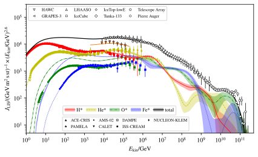
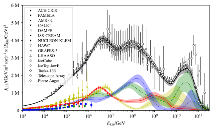
图注：上图为约1 GeV到十的11次方GeV的元素、质量组和全粒子通量；实心点为直接测量，空心点为空气簇射测量。数据已调整到拟合共同能标，直接测量已按各自观测窗口去太阳调制。曲线与色带为GSF及1σ误差。下图将相同谱乘以能量三次方，在线性纵轴上突出膝区以上结构。
怎么看这张图：先比较直接与间接测量的连接，再观察不同质量组在哪些能区占主导。这里已经完成能标对齐，并非原始数据天然重合；应与正文剩余成分张力一起理解。 支持正文的实际观测、模型比较或限制，保留原始面板。
来源与置信度：arXiv HTML；source verified；https://arxiv.org/html/2609.32649v1/cr_flux_traditional.svg；https://arxiv.org/html/2609.32649v1/cr_flux_all.svg
图7：平均质量及其方差
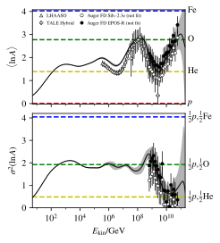
图注：上、下图分别为平均对数质量和其方差随能量的变化。LHAASO与TALE平均质量参与拟合；Auger由同批事件的最大簇射深度矩导出的质量矩仅作比较，空心和实心点区分SIBYLL-2.3e与EPOS-LHC-R解释，能标已统一。
怎么看这张图：关注LHAASO平均质量与模型的系统性偏离，而非只看全粒子谱是否吻合。Auger这些质量矩未被再次独立加入拟合，避免和已有质量比例重复计数。 支持正文的实际观测、模型比较或限制，保留原始面板。
来源与置信度：arXiv HTML；source verified；https://arxiv.org/html/2609.32649v1/cr_flux_lna_moments.svg
图13：大气级联所需的核子通量
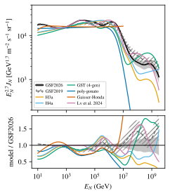
图注：上图比较GSF与文中列出的常用宇宙线参数化所给核子通量，横轴为每核子能量；下图为各模型相对GSF的比值，灰色带表示GSF的1σ不确定度。
怎么看这张图：模型间20%–50%的偏移可大于当前拟合误差，但这是初级核子输入变化。只有再卷积强子产额与大气级联后，才能知道中微子或缪子预测改变多少。 支持正文的实际观测、模型比较或限制，保留原始面板。
来源与置信度：arXiv HTML；source verified；https://arxiv.org/html/2609.32649v1/gsf_vs_models_nucleon.svg
强相关工作
本文主文比较早期GSF与H3a、GST等参数化：共同任务是为宇宙线与大气级联提供可用谱，但旧模型常以少数组分和截止形状表达源族假设。新版样条模型减少了对谱形的预设，新增近期数据及相关误差传播；它没有因此替代源物理模型，而是为这些模型提供更统一的观测基准。参考文献与图10–14可用于追查各输入的定义范围。
今天的《膝区以上延展银河系质子成分》使用部分相同LHAASO等观测，却回答“截断还是延展”这个解释问题。两文不能当成独立实验的相互确认：其能标、误差相关处理和数据选择不同，比较时应先统一观测层假设。一个有意义的后续检验是把该文的参数化放入类似GSF的干扰参数框架，检查延展成分证据对校准自由度是否稳健。
同一事件 / 同类源线索：
相似工作：
基础理论 / 方法工作：
相反观点 / 张力线索：
（未提供）
2. Evidence for an extended Galactic proton component beyond the cosmic-ray knee
- 来源：arXiv / astro-ph.HE
- 链接：https://arxiv.org/abs/2609.33364
- 作者：Jieshuang Wang
- 公告 / 来源日期：2026-09-29
- 阅读层级：重点精读
- 评分：novelty 8/10，importance 8/10，relevance 10/10，final 9.70/10
- 推荐理由：跨膝区到超高能质子组成联合讨论银河成分，直接触及PeVatron和宇宙线起源。
中文题目：宇宙线膝区不必是终点：延伸到100 PeV以上的质子成分及其解释边界
做了什么：作者检验几PeV附近的质子谱变陡，是否真的意味着银河系质子在这里全部终止。使用LHAASO、IceTop以及联合分析中的KASCADE-Grande轻成分数据，比较单个指数截止、平滑折断和两个截止成分；再加入AMS-02与DAMPE，把检验延伸到几十GV以上的全谱。单个终止式截止难以兼顾膝区和高能尾部，而折断或额外高能成分都能改善描述。
质子膝区的折断刚度约3.22 PV、斜率增量约0.86；全谱的两类可接受分解都包含延伸至100 PeV以上的贡献。不过“银河系起源”来自与低能银河宇宙线连续连接的源族解释，不是到源定位结果。作者没有联合处理实验能标和误差相关，最高截止参数又受先验上边界影响，因此这是一项值得进一步检验的谱学证据，不能等同于发现某类确定的100 PeV加速器。
为什么重要：膝区长期被当作一般超新星遗迹加速上限的线索，但总谱变陡可能来自传播效率改变，也可能来自不同源族交接。本文把“谱仍延伸”与“它从哪里来”分成两个层次：前者由高能尾部推动，后者需要源能量预算、各向异性或伴随伽马和中微子证据。这个区分会改变对PeVatron候选的筛选方式，同时保留替代解释。
理论 / 观测 / 仪器方法价值：值得复用的是先限定膝区形状，再做跨能区分解，比较共同需求而非只挑最佳拟合的一条曲线。折断模型与多截止模型虽然组分解释不同，却都需要高刚度贡献，这比某个具体截止中值更稳健。实际复现应加入能标干扰参数、LHAASO组分相关性及跨箱系统误差，再用模拟标定模型比较统计量；这些是当前证据最需要补强的环节。
为什么应该关注：对高能伽马和中微子研究，文章把几PeV膝与极端银河加速器联系起来，提示不能只按普通遗迹的典型上限设置全部源族的先验。LACT及更高能阵列可关注谱是否要求持续的高能质子供给，并与源环境、逃逸和扩展形态联合检查。单个伽马源达到很高光子能量，仍不足以证明它贡献了本地宇宙线高能尾部所需的总功率。
展开详细解读：文章讲解、背景、理论、重点章节、图表与相关工作
文章详细讲解
科学问题首先是一个形状问题：指数截止会让谱在截止以上越来越陡，而幂律折断只是把斜率换成较大的有限值。如果高能端仍保留明显通量，单个截止可能下降得过快。作者以此构建可检验的模型比较，而不是先指定所有质子必须由同一种天体产生；这使数据能先回答膝区是否像一个简单终点。
膝区比较使用0.1–1000 PeV范围的相关观测，质子与氦联合时共享截止或折断刚度，但允许各自斜率和归一化不同。这样共享的是磁约束相关的尺度，不是相同总能量。作者同时排除与分元素测量重复的部分轻成分输入，避免显然的重复计数；不过更细的协方差仍未建模，这限制了显著性的严格解释。
把低能数据加进来后，单看膝附近无法识别的组分连接得到新约束。三截止模型让一个较软的高刚度成分从较低能量开始贡献；两截止加折断模型则让另一个成分穿过膝区继续延伸。两者都能描述全谱，因此共同结论是需要延展贡献，而不是数据已经唯一选定了三种物理源族。
物理讨论将折断与扩散到漂移主导的传播变化相连，也指出超高最大刚度对源功率要求很高。但这些解释依赖稳态、注入谱和传播标度等假设。下一步应在统一系统误差框架下复核形状，再结合各向异性与源端辐射判断银河归属；用名义高显著性直接宣布普通遗迹全部被排除，超出了本文数据能独立支持的范围。
关键结果是怎么做出来的
先看图1左侧的质子单独比较。平滑折断得到约3.22 PV和0.86的斜率变化，相对单截止的似然统计量改进为25.66；考虑参数数目后，AIC下降约21.67、BIC下降约18.34。因此改善并非仅仅“多参数总能拟合更好”，但是否能严格换算发现显著性，还取决于模型间嵌套关系与误差模型。
再看联合质子和氦。两者共享折断约2.76 PV，质子和氦的斜率增量分别约0.69和0.51；这与质子单独拟合并不相同。二截止模型的高刚度尺度升到约823 PV，接近1000 PV的先验上限，提示数据主要要求很长的尾部，未必测出了精确终止位置。
第三步加入AMS-02和DAMPE。图2的三截止模型给出膝附近截止约5.18 PV，高刚度成分截止约603 PV，但后者的不确定范围很宽。混合模型的折断约3.17 PV、斜率增量约0.89，同样能解释谱。此时AIC略偏向混合模型，BIC略偏向三截止模型，差别不足以唯一决定低能到高能如何分配给各成分。
第四步核对附录中的联合全谱结果。加入氦和轻成分后，AIC和BIC反而分别以约1.72与11.66偏向三截止基线。不能把这个结果与质子单独结果混成“折断在所有分析里都获胜”；联合分析也采用了不同参数先验，比较不是只增加一列独立数据的完全受控试验。
最后做稳健性与解释层级的检查。分别采用不同LHAASO强子重建时，折断优于单截止的趋势仍在，这是有价值的检验；但作者没有再拟合实验能标，也将误差近似为独立。因而目前最合适的表述是：在所用数据与似然约定下，简单终止式膝区受到明显挑战；银河起源、源族和最大加速能量则仍属于下一层推断。
展开背景、理论、公式、模型和章节导读
背景知识
膝区是全粒子宇宙线谱在几PeV变陡的特征。早期人们难以分开核种，因此同一条总谱可以由质子截止、重核延续或多个源族叠加产生。近年来分元素及轻成分测量改善，使“质子自己有没有在膝后留下长尾”成为可直接讨论的问题。
指数截止和折断的物理含义不同。有限加速时间、能量损失或最大磁约束可能产生近似截止；传播逃逸的能量依赖发生变化则可以只改变幂律斜率。但真实源族存在最大能量分布，多种截止叠加也可能近似折断，所以光靠函数形状仍不能一对一识别机制。
刚度统一了不同电荷粒子的磁运动尺度。在超相对论区，氦核总能量约为同刚度质子的两倍，因此联合模型共享刚度尺度比共享总能量更贴近磁加速或传播图像。这并不要求质子与氦注入谱完全相同，作者也没有施加这种额外限制。
本地测到的宇宙线已经经历银河传播。即使某个成分从GeV连续延伸到百PeV，银河归属也不是由连续性单独证明的；它只是与低能已知银河成分连接时较自然的一种解释。源距离、空间分布、各向异性和次级粒子信号，才可能帮助打破这种谱分解退化。
基础理论 / 方法脉络
稳态扩散图像中，观测粒子数近似等于注入率乘上驻留时间。扩散越快，粒子越容易逃走，观测谱就比注入谱更陡。因此一个传播系数随刚度的幂指数变化，可以在源加速仍继续的情况下形成膝。这是本文将膝区看作传播探针的基础逻辑。
湍流谱指数决定共振散射效率。在常用近似中，共振扩散系数随刚度按某个分数次幂增长；若漂移项在更高刚度占主导，驻留时间的标度会改变。本文给出相应斜率联系，但将拟合的斜率变化直接译为湍流指数，需要接受这套传播机制已经正确的条件。
多成分模型解决了另一种可能：某一成分在几PeV附近退出，另一成分在更高能继续。由于两条曲线在宽能区重叠，各成分的归一化、斜率和截止会相关。拟合画出的三条虚线因此不是三个天体类别的直接测量，而是给定函数族下的一种分解。
模型比较需要同时计入拟合改善和复杂度。AIC与BIC对额外参数的惩罚不同，适用于回答不同近似问题；两者意见不一致时，应该回到数据支持的共同特征。特别是很高截止接近先验上界时，后验中值对边界敏感，不能作为精确最大能量输入其他计算。
公式与推导
以下沿谱形、似然和传播解释展开，最后的功率关系是作者采用的源可行性标度。高能刚度与能量近似满足
质子1 PV对应约1 PeV，氦在相同刚度对应约2 PeV。这是联合拟合共享刚度而非共享能量的理由。
单截止模型为
$F$有微分通量单位，$R_0$是固定参考刚度。局部斜率随$R/R_c$继续变陡，故远高于截止后通量会快速消失。
本文的平滑折断可写成
$s$控制转折宽度，$\Delta\gamma=\gamma_2-\gamma_1$。低刚度括号趋于一，高刚度则多出$R^{-\Delta\gamma}$，所以最终仍为幂律而非指数衰减。
多源族式表示采用通量相加：
这来自不同群体贡献的可加性，但并不能反过来保证每个数学分量对应一种真实源。组分重叠越强，个别参数通常越退化。
在作者采用的独立高斯误差近似下，模型比较使用
这个式子没有能标干扰参数，也没有非对角协方差；它是解释统计结果的前提，而不是无需检验的自然事实。
考虑复杂度后有
$k$为自由参数数目，$N$为数据点数，越小越优。不能仅凭似然差开方报告发现显著性；非嵌套函数族尤其需要额外的模拟标定。
为理解传播解释，标准稳态近似给出
这里固定传播区域几何，忽略损失、时变和空间结构。若注入$Q\propto R^{-\alpha}$，观测斜率就是注入斜率加扩散指数。
本文讨论从共振扩散到漂移主导：
$q$是湍流谱指数，由此得到$\Delta\gamma=q-1$。例如质子全谱折断约0.89可对应$q\simeq1.89$，但这是接受该机制后的反推，不是直接测量银河湍流谱。
若改成非共振$D\propto R^2$的高能极限，斜率增量会是
同样的湍流指数因而给出更大的陡化。比较这两个极限说明：谱能约束传播机制，但必须同时看注入和混合组分是否改变。
作者用源功率可行性估计补充讨论：
$\beta$表示流速与光速之比，$\sigma_B$表征磁能份额。最大刚度平方依赖使百PV加速代价很高；这个估计只筛选可能源条件，不能测出哪一个源提供了宇宙线。
模型拟合 / 应用方法
复现时需分开膝区与全谱、质子单独与联合四套分析。它们有不同能区、组分和参数先验；把一套分析的最好参数配到另一套的显著性上，会夸大结论。附录的先验范围尤其值得保存，因为高刚度截止常靠近1000 PV上边界。
LHAASO不同强子解释在主分析中被压缩成均值和模型散布，并在附录分别重做比较。这能检查重建模型选择是否改变趋势，却不能覆盖实验间能标移动和组分反相关。今天另一篇GSF提供了这些干扰参数处理的参照，但两文共享数据，因此比较不构成新的独立显著性。
参数推断应同时查看低能、中间和高能成分的相关性。一个高能软成分可能在很低能已经占一定比例，是否把它命名为“新源族”，不能由拟合标签决定。最高截止的长尾和边界效应提示，稳健结论更接近延伸超过某范围，而不是在某个精确能量突然终止。
建议的下一步是构建含共同能标、协方差和替代源分布的前向分析，并对单截止假设生成伪数据，校准似然差分布。这是本日报的检验建议，作者没有完成这套全系统模拟。若延展需求在这些处理后仍保持，才更适合把它作为极端源族功率和伴随中微子预测的强先验。
重点章节 / 结果段落怎么读
-
先读图1及对应膝区比较：抓住截止与折断高能渐近行为的区别，再核对3.22 PV来自质子单独拟合，而2.76 PV来自共享刚度的联合拟合。
-
读图2和附录表2：观察两种全谱分解如何用不同组分接低能数据。重点找共同的延展贡献，避免把每条虚线直接命名为某类天体。
-
读附录表3–4：分别识别强子重建稳健性和联合全谱模型比较，注意AIC、BIC偏好及先验变化，不能挑选对某一种解释最有利的一行。
-
最后读传播与源功率讨论：先接受其稳态和扩散标度假设，再理解湍流指数与源功率的推断。回到观测端思考哪些各向异性或辐射证据能够区分解释。
关键图表与解读
图1：膝区截止还是折断
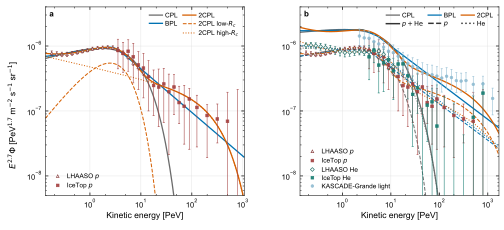
图注：左图比较质子单独的指数截止、平滑折断和双截止模型；双截止虚线分别给出低、高刚度成分。右图为共享刚度尺度的质子与氦联合拟合，颜色区分模型，实线、虚线与点线区分轻成分总和、质子及氦。点来自LHAASO、IceTop及联合分析中的KASCADE-Grande。
怎么看这张图：最有区分力的是膝后尾部是否比单截止更平缓。质子与联合拟合的尺度和斜率不同，不能把左图的参数与右图的统计强度混用；名义显著性仍依赖独立误差假设。 支持正文的实际观测、模型比较或限制，保留原始面板。
来源与置信度：arXiv HTML；source verified；https://arxiv.org/html/2609.33364v1/knee_comparison.svg
图2：低能到高能的不同组分连接
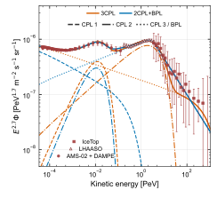
图注：AMS-02与DAMPE约束较低能，LHAASO及IceTop/IceCube约束膝区和高能尾部。橙、蓝实线分别为三截止与两截止加折断的总谱，各种虚线表示对应子成分；两种总谱都能较好描述数据。
怎么看这张图：先看两条总谱几乎同样成功，再看子成分分配明显不同。这说明延展贡献比具体源族分解更稳健；高截止的宽区间和先验上界不允许把曲线终点当精确加速上限。 支持正文的实际观测、模型比较或限制，保留原始面板。
来源与置信度：arXiv HTML；source verified；https://arxiv.org/html/2609.33364v1/proton_full_comparison.svg
强相关工作
今天的GSF工作与本文共享部分高精度宇宙线观测，但GSF着重跨实验校准、质量组成及协方差输出，本文着重比较膝区函数族和源传播解释。两者对能标与误差相关性的不同处理，是复核本文统计强度的直接切入点；相同数据支撑的结论不能当作两次独立发现相乘。
今天IC 443与W51 C的演化模型说明，一些中年遗迹的高能伽马谱可以由早期加速后逃逸的粒子解释，未必要求这些源曾达到PeV。它与本文并不构成简单矛盾：一个研究特定源的辐射与历史，一个研究到地球的总体谱。只有结合源族数量、历史最大能量和逃逸功率，才可能判断普通遗迹与更极端源分别能贡献多少。
同一事件 / 同类源线索：
相似工作：
基础理论 / 方法工作：
（未提供）
相反观点 / 张力线索：
（未提供）
3. Investigating signatures of extinct PeVatron activity in supernova remnants IC 443 and W51 C
- 来源：arXiv / astro-ph.HE
- 链接：https://arxiv.org/abs/2609.35093
- 作者：Silvia Celli, Giovanni Morlino
- 公告 / 来源日期：2026-09-29
- 阅读层级：重点精读
- 评分：novelty 8/10，importance 8/10，relevance 10/10，final 9.70/10
- 推荐理由：IC443和W51C被困与逃逸质子统一建模，定量区分化石高能加速与当前截止。
中文题目：高能伽马不等于曾经的PeVatron：IC 443与W51 C的加速、逃逸和辐射联合模型
做了什么：IC 443和W51 C都是与较密气体相互作用的中年超新星遗迹，已测到很高能的伽马辐射。作者把遗迹膨胀、激波加速上限下降、粒子逃逸和周围扩散连接起来，同时计算仍受约束和已经逃逸的质子产生的强子伽马谱。模型不再把所有高能光子都归因于今天的激波，也不把逃逸粒子任意写成另一条独立幂律。
在采用的均匀环境与年龄、距离下，两源可由历史最高质子能量约100–500 TeV的代表性模型解释，当前上限则已下降到几十GeV；周围扩散系数需比银河平均低约3–10倍。但同一高密度动力学模型低估遗迹半径，尤其W51 C。因此结果说明“不必在这套模型里要求PeV加速”，并未观测性排除它们曾是PeVatron，也没有解决真实气体分布与动力学的全部一致性。
为什么重要：源的年龄会把当前加速、历史注入和此刻发光位置分开。高能质子可能早已离开激波，却仍在周边气体中产生伽马光子；从今天的光谱直接反推今天的最大加速能量，会忽视这个时间信息。本文将三者放进同一演化链，因而比静态质子谱拟合更有物理约束，同时也暴露出环境假设的限制。
理论 / 观测 / 仪器方法价值：可借鉴之处是由同一个加速历史生成受约束粒子和逃逸粒子，再与目标气体卷积，减少两套独立谱任意调节的空间。真实应用应同时核对遗迹尺寸、气体密度、年龄及伽马形态，尤其区分控制膨胀的平均密度与提供碰撞靶的局部高密度。仅在能谱上得到好拟合，不能替代这项几何和动力学检查。
为什么应该关注：对LACT、LHAASO和遗迹中微子预测，这篇提醒我们把“粒子能量足够高”与“源历史达到PeV”分开。可进一步比较不同能量下辐射扩展尺度与分子气体位置，检查是否符合逃逸扩散；若忽略辐射区域的目标质量或另一个加速源，最大能量和能量预算都会受到偏置。两源应分别检验，不能用统一标签代替环境研究。
展开详细解读：文章讲解、背景、理论、重点章节、图表与相关工作
文章详细讲解
科学问题是：中年遗迹的高能伽马尾部是否一定需要早期PeV质子？激波在年轻时速度高、磁放大强，随后减速，最大动量下降。当前仍能约束的低能粒子与很早逃逸的高能粒子在空间和能谱上都不同，观察到的光子是它们与气体共同作用的结果。因此最高光子能量不是加速历史的直接刻度。
作者从抛射物主导阶段接到Sedov演化，采用球对称均匀外部介质，并令最大动量先上升、到Sedov时间达到峰值，之后按时间幂律下降。每个动量对应一个逃逸时刻，逃逸分布由此前受约束的粒子生成，再通过外部扩散演化。这把“何时逃出、逃到哪里、还有多少能量”连到同一参数组。
代表性拟合偏好上限下降指数3，IC 443外部扩散为银河参考值的0.3，W51 C为0.1。对激波相空间谱指数4与4.3，历史峰值能量分别需要不同数值：IC 443约100或300 TeV，W51 C约200或500 TeV。它们不是同一统计置信区间的上下限，而是不同注入假设下的模型示例。
关键局限是均匀环境。为增强强子辐射采用的每立方厘米10个粒子的密度，同时让模型半径只有7.7和11 pc，低于观测约10和24 pc。低密度空腔中膨胀、再照亮高密度云团是可能的解释，但这篇尚未完整实现这种非均匀动力学。因此应把能谱可行性与整体源模型自洽程度分开评价。
关键结果是怎么做出来的
先固定遗迹输入：IC 443采用8千年、1.5 kpc和7个太阳质量抛射物；W51 C采用1.8万年、5.4 kpc和10个太阳质量抛射物，两者爆炸能均为十的51次方erg。密度均取每立方厘米10个粒子，相应Sedov时间约551和741年。后面的历史最大能量全部以这些条件为基础。
再建立激波粒子分布。作者使用相空间动量分布的四次或4.3次幂下降，依据激波能量流设加速效率，并计入下游平流和绝热损失。注意相空间谱还需乘动量空间体积元，不能把它直接说成四次幂的粒子能谱；这个转换对解释软硬程度尤其重要。
第三步通过最大动量历史确定逃逸时间，并计算离开激波的粒子在内外区域的扩散。作者扫描上限下降指数1到4及四个扩散抑制因子，再比较完整伽马谱，使用测点与单侧95%上限约束。这里逃逸谱与受约束谱有共同来源，因而较静态双成分模型更受限制。
第四步看图1–2的宽能段连接。Fermi-LAT到地面高能测量需要在同一模型下兼顾，不能只追最后一两个高能点。较陡注入会要求更高历史上限和加速效率；表1中的IC 443效率约1%–2%，W51 C约10%–12%，显示源能量预算并非同样轻松。
最后把光谱结果放回动力学。让模型半径达到实测值，作者估计环境密度需约2.5和0.15每立方厘米，与谱拟合均匀密度相距明显。尤其W51 C附近还存在其他潜在贡献源，故只以当前能谱优度宣布确定的加速历史并不充分；空间分辨的气体和伽马数据是关键补充。
展开背景、理论、公式、模型和章节导读
背景知识
超新星爆炸先由快速抛射物推动激波，扫过足够多环境物质后进入近似Sedov阶段。激波速度和半径的演化影响加速时间、磁约束和下游粒子冷却，因此不同年龄遗迹即使爆炸能相近，也可能表现出不同伽马谱。
强子伽马来自高能质子或核与气体碰撞产生的次级粒子，其中中性介子衰变贡献光子。目标气体越密，单位宇宙线能量产生的伽马越多；因此明亮不一定代表加速效率高，也可能代表碰撞靶足够多。这种密度与粒子能量预算的退化，是遗迹建模的基本难点。
逃逸不是粒子从宇宙中消失。离开加速区的粒子仍能在周围扩散，如果附近有云团便会形成延迟或偏移的伽马辐射。高能粒子通常更早逃逸、扩散更远，所以能谱与空间形态共同记录加速历史；单一区域光谱会丢掉部分信息。
PeVatron通常指能把粒子加速到PeV量级的源。源现在不是PeVatron与它历史上不是PeVatron完全不同；反之，看到高能光子也要结合辐射机制、粒子谱和几何才能推断历史上限。本文讨论的正是这一历史反演，而非新发现两颗高能源。
基础理论 / 方法脉络
扩散激波加速依赖粒子在激波两侧散射并多次穿越，平均获得能量。加速能持续到某个动量，受源年龄、扩散长度和磁场约束。本文没有从第一性原理求出所有微观磁湍流，而是用最大动量的时间参数化承载这些复杂过程，随后检验其可观测结果。
下游平流会把粒子带离激波，膨胀使它们做绝热功而降能；因此早期注入仍留在壳内的粒子也不是原封不动。逃逸粒子则经历另一种输运，其分布由逃逸时刻、外部扩散和初始空间分布决定。两类粒子同源却走不同演化路径。
外部扩散抑制可使高能粒子在源附近停留更久，提高与局部气体相遇的机会。较小扩散系数和较高气体密度都能增强局部辐射，但改变空间尺度的方式不同。因此谱拟合中的扩散参数更适合与形态一起检验，不能单凭谱就断言已经直接测量了湍流强度。
均匀球对称模型将同一密度用于动力学和碰撞靶，计算清晰却可能不适用于空腔加云团环境。真实平均密度、填充因子和云团穿透程度可能相差很大。本文半径不符恰好表明，放宽这个假设可能改变最大能量、效率和扩散的联合约束，而不只是微调一条归一化。
公式与推导
以下以本文参数化为主，动力学与扩散尺度式是用于理解模型的标准近似。均匀介质Sedov阶段有
半径随密度下降而增大，速度随时间下降。它说明为什么用高密度增强辐射会同时影响尺寸，不能只在辐射模块里无代价改变密度。
激波处相空间分布采用
在相对论区$E\simeq pc$，故$\alpha=4$对应约二次幂粒子能谱。这个体积元转换避免把本文的注入写得比实际陡两次幂。
最大动量历史是
$p_M$是历史峰值，$t_{\rm Sed}$是阶段转换时间，$\delta$描述后期下降。峰值和今天的最大动量必须分别报告。
令$p=p_{\max}(t)$反解后期分支得到
较高动量对应较早逃逸。把这个关系代入传播时间，才能把初始加速谱变成今天周围的逃逸粒子分布。
下游绝热损失的标准局部关系为
正的速度散度表示膨胀，使动量下降；它解释为什么壳内老粒子会软化。完整计算还需沿流线积分，不能用一个恒定损失因子替代全部年龄。
外部扩散系数采用
$\chi$是相对银河参考值的抑制因子。本文代表解为0.3与0.1，其数值依赖上述参考归一化，不能脱离定义只说扩散系数是0.1。
作为教学尺度，均匀各向同性点源扩散给出
这不是论文完整球壳解，却清楚显示更早逃逸与更快扩散如何共同改变发光范围；若扩散长度超过目标云尺度，局部通量也可能反而降低。
质子碰撞产生的微分伽马通量可概括为
$n_p$包含受约束和逃逸分量，截面核把质子能量映射成宽分布的光子能量。没有固定的一对一最高能量换算；用简化十倍关系只能做粗估。
若几何和谱形固定，归一化大致满足
这个比例关系显示密度、效率和距离退化。它也说明，动力学要求降低密度时，原先较低效率的结论不能自动保持，必须重新拟合而不是单独替换一个输入。
模型拟合 / 应用方法
作者扫描上限衰减指数和扩散抑制因子，再调整加速效率等量与宽能段谱匹配。对不同相空间谱指数分别列解，因此表1的100–500 TeV是模型条件变化，而非一条后验的统一区间。上限数据作为单侧限制使用，不能把未探测能箱当作零通量对称误差点。
输入距离和年龄基本固定，意味着当前误差描述没有完全覆盖环境认识的不确定性。改变年龄会改变逃逸传播时间及当前上限，改变距离既改变光度也改变由角尺寸推得的物理半径。这些量彼此耦合，应用到另一个遗迹时不能只按光度比缩放。
光谱比较包含多种仪器的长期数据，仪器之间的区域选择、源混叠和扩展辐射覆盖可能不同。本文模型把这些用于宽能谱约束，但未完成全部能谱与形态的联合拟合。因此最值得新增的是对同一空间模板和气体分布的前向比较，检查高能尾部是否确属同一粒子群。
半径检验是本篇最直接的失败诊断。若坚持均匀每立方厘米10个粒子，尤其W51 C的尺寸严重偏小；若改用低密度动力学，又需要解释碰撞靶在哪里。下一版应区分空腔、壳层和云团，并检验粒子进入云团的能量依赖。这是作者讨论所指向的改进方向，不是本篇已经完成的自洽三维模型。
重点章节 / 结果段落怎么读
-
先读动力学与最大动量定义：分清历史峰值、当前上限和逃逸时刻，后文“无需PeV”的含义依赖这三个时间层次。
-
读受约束与逃逸粒子方程：跟踪同一注入如何分为两条演化路径，尤其看平流、绝热损失和外扩散各在哪一步作用。
-
读表1并对照图1–2：逐源比较两种注入假设的效率、峰值及当前能量，不把不同模型参数范围当成统计置信区间。
-
最后读环境与半径讨论：检查辐射要求的密度是否同时支持动力学，判断哪些结论在非均匀环境下必须重做。
关键图表与解读
图1：IC 443的演化谱模型
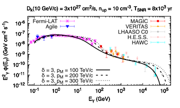
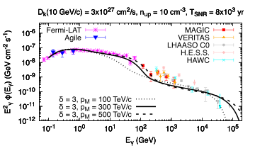
图注：IC 443在均匀周围介质下的伽马能谱模型。左、右面板分别采用激波相空间动量谱四次与4.3次幂下降；实线为相应最佳模型，参数见正文表1。点为原文列出的空间与地面伽马观测。IC 443和W51 C分别需要约3倍和10倍的外部扩散抑制。
怎么看这张图：比较两种注入下宽能段连接及高能尾部，注意相空间谱并非同指数粒子能谱。光谱拟合没有同时解决均匀模型半径偏小的问题，因此只能说明所列历史加速解可行。 支持正文的实际观测、模型比较或限制，保留原始面板。
来源与置信度：arXiv HTML；source verified；https://arxiv.org/html/2609.35093v1/fit_IC443_10_3e27_uni_alfa4.svg；https://arxiv.org/html/2609.35093v1/fit_IC443_10_3e27_uni_alfa43.svg
图2：W51 C的演化谱模型
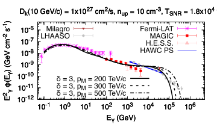
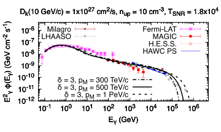
图注：W51 C在均匀周围介质下的伽马能谱模型。左、右面板分别采用激波相空间动量谱四次与4.3次幂下降；实线为相应最佳模型，参数见正文表1。点为原文列出的空间与地面伽马观测。IC 443和W51 C分别需要约3倍和10倍的外部扩散抑制。
怎么看这张图：比较两种注入下宽能段连接及高能尾部，注意相空间谱并非同指数粒子能谱。光谱拟合没有同时解决均匀模型半径偏小的问题，因此只能说明所列历史加速解可行。 支持正文的实际观测、模型比较或限制，保留原始面板。
来源与置信度：arXiv HTML；source verified；https://arxiv.org/html/2609.35093v1/fit_W51C_10_1e27_uni_alfa4.svg；https://arxiv.org/html/2609.35093v1/fit_W51C_10_1e27_uni_alfa43.svg
强相关工作
本文延续其引用的Celli等2019年加速—逃逸建模思路，进一步连接抛射物主导与Sedov阶段，并将LHAASO等高能测量加入具体源比较。这个继承关系说明方法创新主要是演化链的完善与新约束应用，而不是首次提出逃逸粒子照亮气体。相关文献可从原文对应引用追溯，避免把模型框架当作全新机制。
今天关于膝区以上质子延展成分的论文讨论整体宇宙线需要多高能的贡献，本文则说明两个中年遗迹的辐射不必要求PeV历史峰值。二者回答尺度不同的问题，不能直接互相否定。合理连接是检查整个源族的能量预算、历史最大能量分布和逃逸谱，随后再与本地宇宙线观测比较。
同一事件 / 同类源线索：
相似工作：
基础理论 / 方法工作：
（未提供）
相反观点 / 张力线索：
（未提供）
4. JWST unveils a dust-obscured supernova associated with a gamma-ray burst
- 来源：arXiv / astro-ph.HE
- 链接：https://arxiv.org/abs/2609.35697
- 作者：B. Schneider, A. J. Levan, N. Sarin, N. A. Rakotondrainibe, B. P. Gompertz, V. Buat, J. T. Palmerio, D. B. Malesani
- 公告 / 来源日期：2026-09-29
- 阅读层级：重点精读
- 评分：novelty 8/10，importance 8/10，relevance 9/10，final 9.35/10
- 推荐理由：JWST从强宿主光中分离尘埃遮蔽GRB超新星谱，给出比发动机拟合更直接的起源证据。
中文题目：从明亮宿主中找回被尘埃遮蔽的超新星：JWST确认GRB 240825A的大质量恒星起源
做了什么：GRB 240825A的瞬时辐射特征曾让物理分类不够明确，地面后随观测也没有清楚看到超新星。作者在爆发后66.5个观测者日、即静止系40.1日取得JWST近红外二维光谱，利用瞬变比宿主更集中的空间分布，找出带有宽谱特征的额外成分。早期光学到X射线余辉提供视线消光约1.37星等，再以SN 1998bw模板检验超新星解释。
经验宿主减除与跨10个空间像素的联合拟合都支持一个类似宽线Ic型超新星的成分。它在整段提取区域仅占约13%的观测通量，在峰值像素却约占44%，解释了为何空间分辨近红外光谱有效，而较早地面积分观测没有明显检出。结果支持大质量恒星爆发通道，但单期模板匹配不能唯一确定镍质量、爆炸参数或中心引擎。
为什么重要：没有看见超新星不等于没有超新星：尘埃削弱短波光，宿主又把弱瞬变稀释。本文用实际空间和谱形证据突破这个选择效应，比仅凭伽马持续时间判断源通道更直接。它也提示，以地面光学未检出建立的“无超新星GRB”样本，可能混入被消光和宿主背景遮蔽的恒星爆发事件。
理论 / 观测 / 仪器方法价值：方法价值在于把宿主和瞬变的不同空间分布放进光谱分解。邻近像素可作为经验背景，但可能仍含瞬变；作者因而再用共享宿主谱形、平滑空间亮度和紧致超新星分布联合拟合多个像素，检验减除偏差。可迁移到亮宿主中的其他瞬变，但点扩散函数、空间颜色梯度和模板多样性都需要独立检查。
为什么应该关注：高能事件分类会影响对前身星环境、喷流形成和多信使伴随信号的预期。本文值得关注的是分类证据如何升级：从短暂伽马特征和光学上限，走到带宿主建模的超新星谱。宿主整体金属丰度较高也值得后续研究，但它不是爆炸位置的直接金属测量，不能据此宣布某个局部前身星金属上限被精确突破。
展开详细解读：文章讲解、背景、理论、重点章节、图表与相关工作
文章详细讲解
最初的疑问来自多种分类线索并不完全一致。该暴在GBM特定能段的主要辐射持续约4秒，软能段又有更长尾部，快速变化尺度也很短。持续时间受能段和灵敏度影响，不能单独决定是并合还是大质量恒星坍缩；真正关键的是寻找与后者直接相关的超新星证据。
作者先用约11.2小时的余辉光谱与X射线约束消光。余辉本征近似幂律，波长相关的尘埃吸收使其变红；统一多波段尺度后，拟合得到视线视觉消光1.37±0.08星等。2175埃附近隆起只有弱提示，不能写成确定测得银河系式尘埃特征。
JWST观测提供第二条、更加直接的证据。将不同空间像素的光谱在2.9微米附近归一后，GRB位置附近短于2微米的额外光具有宽谱结构，而不是简单平滑幂律。经验减除邻近宿主光谱后，它与经过消光的SN 1998bw类似；跨像素联合拟合又确认了紧致分布，避免只靠一次背景相减下结论。
结论的边界来自单期数据和模板假设。模板相位约33天比实际静止系40.1天年轻，可用约1.21的时间伸缩解释，但这并不测得爆炸发生得更晚。模板总亮度约为SN 1998bw的0.85–1.2倍，范围还受宿主处理影响。要得到可靠爆炸质量、镍产额与速度演化，仍需要多期光谱与光变曲线，而不是把一个模板系数直接翻译为物理参数。
关键结果是怎么做出来的
第一步控制早期余辉的谱能量分布。作者把不同时间与仪器的资料归到共同历元，X-shooter谱需要2.15的通量重标，UVOT按测得衰减律外推，并处理银河前景。单幂律与带冷却折断模型的BIC差仅约0.6，没有足够理由宣称发现冷却折断；最终消光估计应连同这些建模条件理解。
第二步定位JWST中的额外光。NIRSpec狭缝提供二维空间—波长信息，每像素约0.1角秒，对应约0.72 kpc。图3显示27–29号像素的光谱在共同归一后出现不同形状，峰值靠近GRB位置；位置集中与宽谱结构共同支持瞬变，而不是宿主整体颜色变化的简单描述。
第三步做经验检验。以30号像素为宿主参照，把其缩放后与SN 1998bw模板一起拟合27–29号像素。图4呈现减宿主前后及去消光后的比较，报告的总模板亮度约0.85倍。由于30号像素可能仍含少量超新星，经验减除存在扣掉真实信号的风险，作者没有把这一结果作为唯一答案。
第四步进行联合分解。26–35号共10个像素共享宿主谱形，并用平滑先验约束宿主亮度随位置变化；超新星使用自由中心和宽度的高斯空间分布。联合解给出中心28.55、宽度约0.95像素，总超新星归一化约1.1，而28号像素系数约0.42，两者代表不同积分范围，不能混为一谈。
第五步回到此前未检出。图6把同样消光和时间伸缩的超新星放回地面观测历元：17.6天时预期约r=26.2、z=24.9，与当时约25和24.8的上限相容。未检出因此不再反驳超新星解释；这是对已有上限的正向预测检验，而不是把上限重新当成一次正探测。
展开背景、理论、公式、模型和章节导读
背景知识
长短GRB分类最初来自伽马持续时间分布，但观测分类并不与前身星通道一一对应。能段、红移、弱尾部及仪器灵敏度都能改变持续时间，部分事件又具有混合线索。超新星的宽光谱特征提供一条更接近爆炸物质本身的证据，因此在有条件时应优先于只看持续时间。
余辉是喷流与外部介质相互作用产生的连续辐射，通常随时间衰减；超新星则在更长时间尺度演化，并带有膨胀抛射物形成的宽谱结构。它们在早期可能相互覆盖，晚期又会被宿主星光淹没。选择合适历元与波段，是提高分解可辨识性的关键。
尘埃对短波吸收更强，所以视觉消光只有一到两星等也能显著压低光学超新星，同时近红外仍有可检测信号。消光是对瞬变光的乘法效应，宿主背景是额外相加的光；这两种作用不能用一个自由归一化互相替代，否则会偏置模板形状和亮度。
宿主整体性质与爆炸局部环境也需要分开。整星系的恒星质量、恒星形成率和强线金属丰度可以描述总体背景，但爆炸位于离中心约3.27 kpc处，可能存在梯度。本文宿主整体金属丰度较高，不等于已经解析测量了前身星周围同样高的丰度。
基础理论 / 方法脉络
空间分解利用的是紧致瞬变与扩展宿主的形态差别。在整条狭缝积分时，宿主不断增加而瞬变信号有限；缩小到源附近像素，可以提高瞬变占比。因此13%和44%并不矛盾，它们分别对应积分区域和峰值像素，恰好量化了空间信息提供的优势。
经验背景减除的直观优点是无需完美构建宿主恒星种群模型，但代价是邻近像素必须代表目标位置的宿主。若存在颜色梯度、尘埃差异或瞬变翼部污染，减除会产生或削弱宽特征。联合拟合通过共享信息减少任意性，却又引入了宿主平滑与超新星空间分布的模型假设。
模板匹配检验的是数据能否由已知超新星型谱解释。时间伸缩把模板演化速度调整到目标，亮度缩放改变振幅，消光改变颜色；三者存在退化。单期光谱若只能看到有限波段，不能同时精确求出所有爆炸物理量，尤其不能把模板相位误读为真实爆炸时刻。
宿主建模还涉及不同口径。全星系光度数据的CIGALE拟合给出整体恒星质量约十的10.12次方太阳质量；联合狭缝谱的恒星种群归一化只描述被提取区域。两种质量差异不意味着某一种错误，而是积分区域和假设不同；报告时应明确观测覆盖，避免把局部参数当成全局性质。
公式与推导
先把观测者时间变到源静止系：
这是宇宙膨胀导致的时间伸长，不含模板时间伸缩；后者反映超新星演化相对参照事件的快慢，不能混为一个校正。
余辉的标准近似为
作者用共同历元的多波段资料约束谱指数和消光。时间指数的符号定义在文献中可不同，使用时必须与具体外推形式一致。
尘埃消光作用为
星等是对数单位，因此1.37星等不是通量下降1.37倍，而是V带保留约$10^{-0.548}$。波长依赖由选定消光曲线决定。
为解释联合拟合，可将第$i$个空间像素的模型简写为
$G$是共享宿主谱形，$b_i$是各像素宿主幅度，$P_i$是相对空间分布且令$P_{28}=1$，$A_{28}$为28号像素模板归一化。这个结构明确宿主相加、消光只作用于对应瞬变分量。
紧致分布的高斯近似可表示为
中心和宽度由联合数据约束。它是本文采用的波长独立空间近似，并非已完成精确波长相关仪器点扩散函数标定，尤其要警惕把窄后验等同于无系统误差。
在统一模板归一化下，积分区域的总振幅满足
因此单像素0.42与全区域约1.1可以同时成立。邻近30号像素仍可有非零瞬变贡献，也解释了经验背景相减为什么可能偏低。
给定波段内超新星的观测通量比例为
论文报告28号像素约43.9%，全提取区域约13.1%，可信区间分别约41.1%–47.0%和11.9%–14.3%。这些是模型分解的通量份额，不是超新星发现概率。
若参照谱在$t_s\simeq33.05$天最匹配，时间伸缩定义为
它表示目标在同一观测年龄呈现更年轻模板的形状。用伸缩光变曲线回推地面历元属于模型预测，需要保留亮度与消光不确定性。
最后用星等差连接未检出检验：
将模型通量与对应滤光片响应积分后再换成星等，才能与r、z上限比较。不能拿一处单色谱点或去消光后的亮度直接比观测上限。
模型拟合 / 应用方法
早期余辉拟合先处理银河前景和跨仪器时间、通量尺度，再比较单幂律与折断幂律及消光曲线。弱的2175埃隆起与很小的模型准则差应如实保留，不能把可见的一点结构当作稳健尘埃类型测量。这里的消光随后进入晚期超新星分解，形成可追踪的跨历元条件。
经验法用邻近像素作宿主模板，各目标像素有独立宿主和超新星幅度，共享超新星相位。其优点是背景来自同次观测；不足是空间梯度和瞬变污染难以完全消除。与联合拟合比较得到的0.85至约1.1的总归一化差异，应当视为背景处理系统性的提示。
联合法使用恒星种群宿主谱、宿主空间平滑先验及紧致高斯超新星分布。相位先验以实际静止系年龄附近为中心，消光固定为早期估计；采样结果给出的细误差因此是这些假设下的条件误差。固定消光、模板库多样性和真实点扩散函数变化没有因采样步数足够多而自动消失。
宿主整体金属丰度采用强线标定，氮线还涉及从较弱线推另一条线的处理。约1.5倍太阳丰度的表述依赖标定体系，且不等同爆炸位置。若要讨论大质量恒星通道对金属的依赖，需要同一标定下的空间分辨观测，并与统计选择函数比较；单个事件能提供边界案例，不能重写整个族群分布。
重点章节 / 结果段落怎么读
-
从观测与余辉SED部分入手：弄清哪些数据决定红移、消光和共同历元，确认2175埃结构与冷却折断都未达到强证据层级。
-
连读图3与经验减除段落：先用空间集中性确认额外光，再看宽谱结构是否与超新星相符，最后检查30号背景像素可能含有多少瞬变。
-
读联合空间拟合及通量份额表：分开单像素振幅、全区域振幅和观测通量比例，理解同一瞬变为何在整合光中弱、局部像素中强。
-
看图6和宿主讨论：核对模型为何兼容地面上限，再把全局金属丰度与局部前身星环境分开，保留对爆炸参数的限制。
关键图表与解读
图3：在空间像素中识别额外光
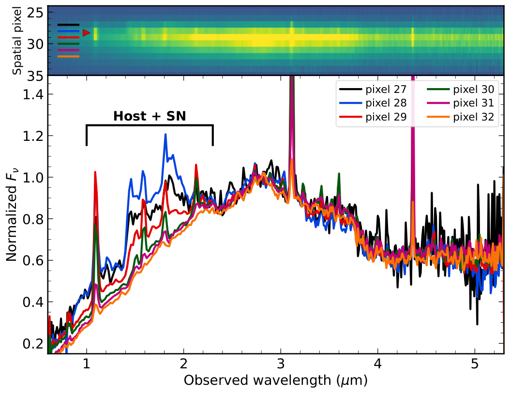
图注：JWST/NIRSpec在爆发后66.5个观测者日、静止系40.1日的二维光谱及逐像素提取谱。上图红三角标出预期GRB位置，彩色标记对应27–32号像素；下图各谱在观测波长2.9微米归一，黑线标识宿主与超新星共同发光区域。
怎么看这张图：先找GRB附近像素的谱形差异，再看短波额外成分是否集中。归一后的差异不是绝对光度测量；其价值是提示用空间分解将弱瞬变从亮宿主中提取。 支持正文的实际观测、模型比较或限制，保留原始面板。
来源与置信度：arXiv HTML；source verified；https://arxiv.org/html/2609.35697v1/GRB240825A_spectrum_pixels_norm_obs.png
图4：宿主减除后的超新星谱
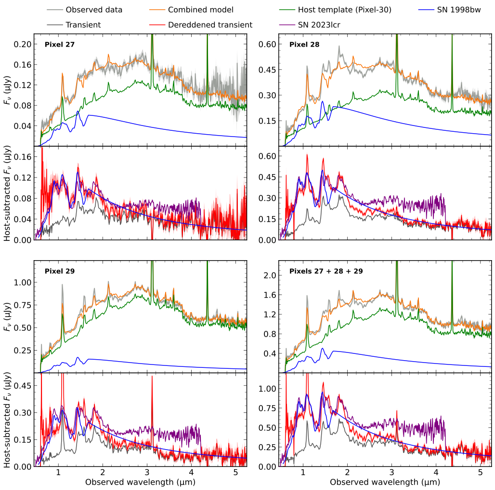
图注：四个面板分别为27、28、29号像素及其和。每个上子图显示观测谱、缩放的30号宿主谱、受消光SN 1998bw模板及总模型；下子图比较减宿主后、去消光后谱与无消光模板，也叠加独立缩放的SN 2023lcr。阴影表示1σ误差。
怎么看这张图：宽谱形状而非单点增亮支持超新星解释。30号像素可能仍含瞬变翼部，因此经验减除应与正文跨10像素的联合拟合对照，不能把模板重合当作无系统误差的亮度测量。 支持正文的实际观测、模型比较或限制，保留原始面板。
来源与置信度：arXiv HTML；source verified；https://arxiv.org/html/2609.35697v1/GRB240825A_pixels27-28-29_hostsub_joint_SN1998bw_AT2023lcr_FM90_Av1.37_comb.svg
图6：为什么地面没有检出
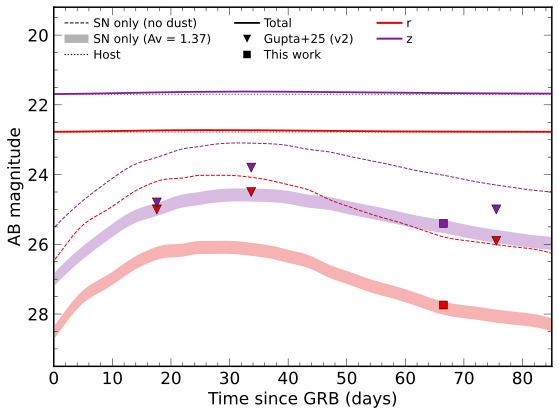
图注：红色r带和紫色z带曲线由SN 1998bw模板移到红移0.659、时间伸缩1.21、亮度缩放0.85–1.2并加上1.37星等视觉消光得到。虚线为无宿主消光的超新星，点线为宿主，实线为二者之和；三角为地面3σ上限，方块为与晚期JWST谱匹配的合成星等。
怎么看这张图：将有消光的预测与相同滤光片上限比较，能看出此前未检出与超新星解释相容。曲线主要是模板预测，不是新取得的连续光变观测，不能据此声称完整测得超新星峰值。 支持正文的实际观测、模型比较或限制，保留原始面板。
来源与置信度：arXiv HTML；source verified；https://arxiv.org/html/2609.35697v1/GRB240825A_SN98bw_host_Gupta25_rz.svg
强相关工作
SN 1998bw是本文的主要光谱与光变参照，图4还比较SN 2023lcr。模板相似性支持宽线Ic型超新星解释，但模板的亮度、演化速度和抛射物结构并非普适常数。论文新增的是在受消光且宿主较亮的GRB中恢复其超新星成分，而不是重新测量模板事件本身的爆炸参数。
此前针对同一GRB的地面研究提供余辉衰减与晚期上限，本文并未否定那些测量，而是在空间分辨与近红外波段补充了它们缺少的信息。图6的正向预测显示旧上限与新识别相容，体现了“未检出约束什么”必须依赖消光、背景和历元。相关原始观测工作可从主文Gupta等2025的引用追溯。
同一事件 / 同类源线索：
相似工作：
（未提供）
基础理论 / 方法工作：
（未提供）
相反观点 / 张力线索：
（未提供）
5. Correlated Signatures of Plasma Lensing in Fast Radio Bursts
- 来源：arXiv / astro-ph.HE
- 链接：https://arxiv.org/abs/2609.31842
- 作者：Paz Beniamini, Pawan Kumar
- 公告 / 来源日期：2026-09-29
- 阅读层级：重点精读
- 评分：novelty 8/10，importance 8/10，relevance 8/10，final 9.00/10
- 推荐理由：等离子体透镜折叠焦散把时延、放大与条纹联系，给出可检验联合诊断而非单现象解释。
中文题目：怎样识别真正的FRB等离子体透镜：从成对像、延迟到频谱条纹的一致性检验
做了什么：FRB的窄带增亮、复杂时间—频率结构和偏振变化，既可能来自辐射源，也可能来自传播。作者分析一维高斯等离子体薄透镜的焦散附近行为，把放大、两像到达时间差、频谱包络、干涉条纹、第三个像和偏振变化连成一组预测。焦散是相邻光线路径在映射中合并的位置；几何光学给出高放大，但有限源尺寸和波动效应会截断发散。
重要结果是，相位路径差的标度不能直接当成观测到达时间差。两像群延迟随总放大约成反比，因而相干条纹间距随放大增大，而增亮包络反而变窄。论文据此提出联合一致性检查，尚未对某个新FRB完成透镜探测或唯一环境反演。原文一处条纹数值式的放大因子与其一般公式、表1相反，下面按一般推导说明并保留这项核查发现。
为什么重要：单个窄带亮斑很容易被多种机制解释，真正有区分力的是多个可观测量必须同时遵循同一几何关系。本文把透镜假说变成可否证的组合预测：延迟与条纹互为倒数、包络和放大具有不同标度、第三像应有相应亮度和色散行为。它为避免把复杂动态谱一概称作透镜提供了实用标准。
理论 / 观测 / 仪器方法价值：理论价值在于从薄屏相位出发，分清驻相成像、群延迟和相干叠加，再加入有限源、带宽、偏振和散射造成的条纹抑制。应用需要高时间分辨动态谱、精细频率通道和尽可能完整的偏振信息；仪器频响本身也会改变可见相干性。用一幅好看的条纹图反推源本征相干时间，通常缺少必要控制。
为什么应该关注：这套思路可用于高能与射电多信使环境研究中的传播诊断：如果延迟、差分色散和法拉第旋转能共同测量，可以约束透镜电子柱和视线磁场，而不仅是“附近有气体”。但它不能直接证明FRB源属于某一种天体，也不能从理论示例给出的环境参数表，宣称已经测量了真实磁星风云或双星风的性质。
展开详细解读：文章讲解、背景、理论、重点章节、图表与相关工作
文章详细讲解
本文首先追问为什么等离子体透镜的可观测结构不能直接照搬引力透镜直觉。冷等离子体折射具有强烈频率依赖，观察频率改变时，实际穿过屏的位置也会变。因此光子的额外几何路径和电子柱同时变化，群延迟不仅是沿一条固定路径的色散项。
作者选择一维高斯电子柱，保留一个可解析且能产生折叠焦散的模型。超过临界透镜强度后，某些源位置对应三个像，其中两个在焦散处合并。展开局部映射可得到放大与像间距离的标度，再把实际群延迟带回时间—频率图，连接成对爆发、重叠增亮和相干条纹三个观测极限。
关键预测是高放大两像的群延迟差随放大减小，条纹间距随之增大；增亮包络宽度却通常随放大平方的倒数缩窄。频谱中的大尺度包络和小尺度条纹因而约束不同组合参数。只有两像互相保持足够相干，且源尺寸、频率分辨与偏振投影允许，条纹才真正出现。
模型明确存在适用边界。一维、孤立、平滑透镜只是理想化；体积填充湍流可能带来很多焦散或强散射，破坏单个透镜图像。作者讨论稀疏薄片或丝状结构的可行性，但没有唯一确定真实环境。应用应同时检查几何光学是否有效、强放大是否被波动截断，以及观测能否分辨预期延迟和条纹。
关键结果是怎么做出来的
第一步从电子柱和薄屏几何建立相位，求驻相路径得到透镜方程。透镜强度随频率平方的倒数增加，低频并不是简单把同一个像延迟更多，而可能改变像的数量和位置。只有强度超过约2.24，本文高斯模型才产生相关焦散结构。
第二步在焦散处做局部二阶展开。源位置偏离焦散的量与像偏离量平方成正比，而放大与后者成反比。于是高放大只存在于很窄的位置范围，有限尺寸源会把峰值平均掉；这一步给出源尺寸上限的标度，而不是直接测出了FRB发射区半径。
第三步把相位对角频率求导，获得真实群延迟。因路径本身随频率变化，结果不同于把相位差直接除以频率。作者推得两像延迟随放大约为反比，并在数值曲线中检验；这是把数学焦散转成可观测爆发分离的关键一步。
第四步看图4和图6。图4比较解析近似与数值解、非相干强度相加与相干电场相加；图6分别展示分离的复制爆发、重叠但非相干的结构、以及重叠相干条纹。图中的冷等离子体固定柱密度轨迹不能完全跟随真实路径，说明用单个色散量去色散可能留下有物理来源的残差。
第五步加入环境与仪器限制。有限源、通道带宽、偏振差异、散射都会压低条纹可见度；差分法拉第旋转则把磁场带入预测。表1汇总这些量的共同约束，但不是每一项都独立：条纹间距与两像群延迟互为倒数，重复把它们当独立参数会高估信息量。
展开背景、理论、公式、模型和章节导读
背景知识
FRB是极短而明亮的射电脉冲，传播途中经过的自由电子会造成低频晚到的色散。通常用一个电子柱积分描述这条频率依赖，但若有横向电子密度梯度，射线路径会弯曲，不同频率不再采样完全相同的柱。这时简单单色散模型可能失效。
等离子体透镜可以使射线聚集或发散，并在特定位置产生多个像。焦散处几何映射的雅可比趋于零，看起来放大无限；真实波有有限波长，源也不是数学点，发散会被平滑。观测中的巨大亮度并不意味着无穷大的物理能量，也不必全由源瞬时释放增加造成。
两条传播路径若到达相隔很久，可形成分开的相似脉冲；若时间上重叠，则可能仅增加强度，也可能在电场层面发生干涉。后者要求互相相干，表现为频谱条纹。脉冲包络重叠与电场相干是两件事，不能看到时间重叠就必然预期高对比条纹。
射电偏振又提供独立传播信息。磁化等离子体使线偏振方向发生波长平方相关的旋转，两条路径的电子柱和磁场不同，会产生差分旋转并改变叠加。强总旋转也可能在有限通道内造成去偏振，因此磁场越大并不总意味着越容易观察到干涉诊断。
基础理论 / 方法脉络
薄屏近似把沿视线延伸的介质压缩成一个电子柱分布，只保留屏内横向变化；源、屏和观测者的距离组合控制几何延迟。它适合屏厚远小于相关距离的情形，却忽略多屏耦合和复杂三维结构。本文一维高斯形状进一步选择了可解析的局部模型。
驻相条件决定哪些路径形成像，映射导数决定放大；群延迟则来自相位对频率的导数。它们由同一个相位产生，却不是同一物理量。色散介质中特别要保留频率依赖，否则会把焦散附近的相位差三次标度误当成实际脉冲延迟。
折叠焦散的局部平方关系具有一定普适性，很多平滑透镜附近都可近似采用。不过数值系数、第三像性质和高斯透镜的两类焦散分支并非普适。使用本文表格时，需要先判断事件对应哪个分支及其几何条件，不能只选对观测最有利的一条标度。
干涉可见度是多个因素的乘积。即使源电场本征相干性很短，窄频带滤波也会延长观测场的相干时间；反过来，扩展源不同位置的条纹错位又会洗掉条纹。因此从可见度反推源尺寸或相干性前，必须明确通道响应、散射、偏振和像间亮度比的影响。
公式与推导
以高斯柱密度和几何距离起步：
$a$是屏内横向尺度，$N_0$为电子柱密度，三个距离分别连接源、透镜和观测者。这把三维传播压缩为一维屏映射。
定义透镜强度与菲涅耳尺度：
两者量纲分别为一和长度平方；$\alpha\propto\nu^{-2}$。本文焦散临界强度为$e^{3/2}/2\simeq2.24$，更弱透镜没有相同的多像结构。
驻相映射及有符号放大为
实际强度使用$|\mu|$，负号表示像的奇偶性。映射导数为零的位置产生焦散，不能把负放大解释成负光子数。
令像位于$u_c\pm\epsilon$，并定义$\eta=d^2u_s/du^2$在焦散处的值，局部有
$M$是成对像总非相干放大，故$M\propto|\Delta u_s|^{-1/2}$。要保持高放大，源投影尺度也必须小于相应很窄的位置区间。
相位与群延迟的差别是核心：
色散项在相位与群延迟中符号不同，因为$\alpha$随频率变化；沿驻相路径求导时还要正确处理路径条件。这一步不能用$t_g=\Phi/\omega$替代。
本文高放大极限给出两像群延迟量级
A、B为该高斯透镜两类焦散。关键共同标度是$M^{-1}$；相位差除以频率则可按$M^{-3}$变化，两者是不同对象。
相干叠加的相位随频率变化一周形成相邻条纹，因此
前者量纲为Hz，后者是无量纲包络相对宽度，系数还依赖分支和强度。原文式52的一处数值写法含反向的$10/M$，与式44、一般倒数关系和表1不一致；这里不复用该数值前因子。
局部轨迹还满足
两像在焦散频率附近沿抛物线合并，A与B分支开口频率方向不同。这比单独一条冷等离子体延迟曲线增加了可检验形态信息。
波动效应使几何光学高放大受到上限约束：
当相位差小到不能再分开两条几何路径时，就需要波动描述。不能为了匹配任意明亮爆发无限提高几何放大。
最后，近似均匀视线磁场下有
色散量用pc每立方厘米、旋转量用弧度每平方米。这里是两路径真实电子柱差，不应未经几何校正就用单色散拟合的有效差值代替；这也是联合延迟和偏振诊断的必要条件。
模型拟合 / 应用方法
本文不是某个FRB事件的拟合报告。它先固定理想化透镜和参数，比较解析近焦散近似与完整数值解，再绘制动态谱与环境量级表。图4的吻合检验的是理论近似在该模型内有效，不能转述成观测数据已经证明高斯透镜。
真实事件应用应先测可直接观测的量：是否有形状相关的复制脉冲、像间延迟是否随频率变化、条纹间距能否与延迟互相匹配、包络随时间如何移动。随后才用模型反推透镜尺度与有效距离组合；没有独立横向速度或距离时，多种环境可以共享相同的动态谱标度。
选择时间与频率分辨率时需要正向卷积仪器响应。分辨率不足会把相干条纹平均掉，狭窄通道又会改变观测相干性；源有限尺寸和偏振差也会产生相似的低可见度。因此未见条纹不能单独否定所有透镜，见到高对比条纹也不能直接证明源本征长期相干。
若拟合得到很大的电子柱或磁场，还需检查总法拉第旋转、通道去偏振和散射是否允许信号存活。作者对体积填充湍流的分析指出，孤立高放大透镜与大量焦散混淆之间可能只有很窄参数区。稀疏结构因而值得考虑，但它仍需观测支持；环境表中的示例不是对某个FRB的已测参数。
重点章节 / 结果段落怎么读
-
先读II节相位与几何定义：确认相位、群延迟和电子柱的区别，后面的时间—频率预测全部依赖这些定义。
-
读III节焦散展开、有限源和波动限制：从映射导数理解高放大，再看为什么真实放大不能无限增大，以及哪些源尺寸条件才允许条纹。
-
连读图4、图6和表1：将频谱包络、条纹与成对像延迟分开，再找它们必须共同满足的关系；同时注意原文式52数值因子的不一致。
-
最后读磁化环境、湍流与附录可见度：检查理想理论能否通过散射、偏振和仪器响应进入真实数据，避免直接套环境示例反演源类型。
关键图表与解读
图4：增亮包络与干涉条纹
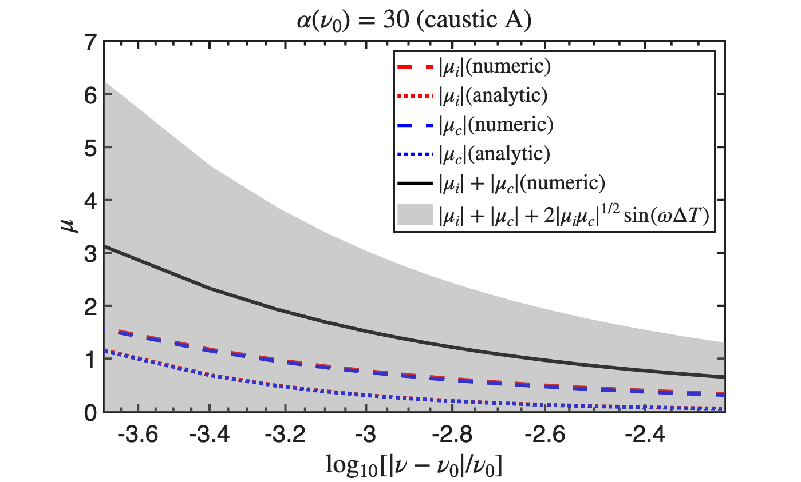
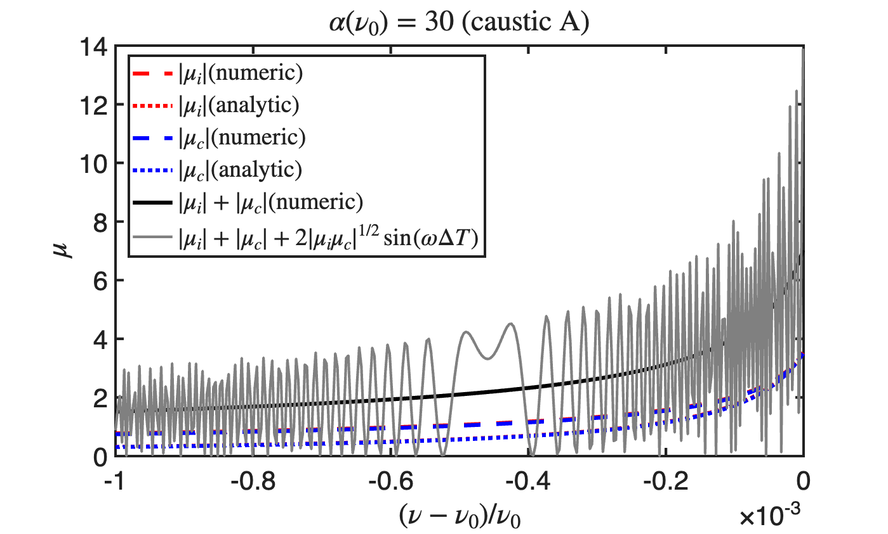
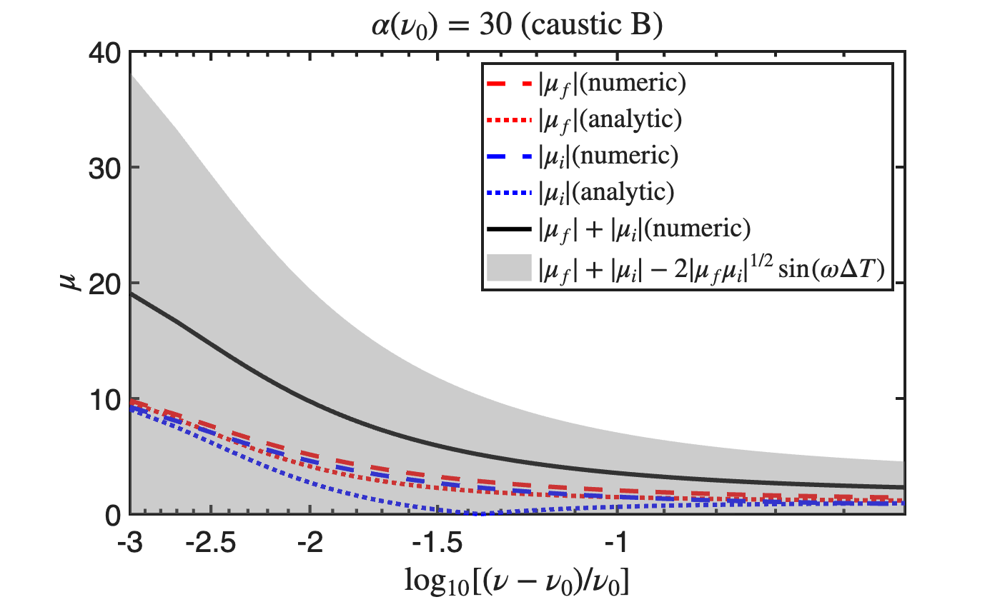
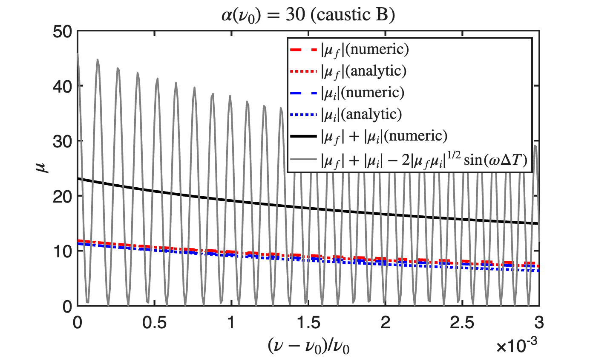
图注：上、下分别为A、B焦散附近的放大频谱，采用文中指定透镜尺度、距离、1 GHz参考频率和电子柱。虚线为数值解，点线为解析近似；黑色为两像非相干强度和，灰色范围为完全相干叠加。左图主要显示包络，右图放大较细的条纹结构。
怎么看这张图：不要把包络宽度当条纹间距：它们随放大的标度不同。解析与数值一致检验的是理想模型，条纹能否在真实资料出现还取决于通道、源尺寸、偏振和相干性。 支持正文的实际观测、模型比较或限制，保留原始面板。
来源与置信度：arXiv HTML；source verified；https://arxiv.org/html/2609.31842v1/spectrumAfull.png；https://arxiv.org/html/2609.31842v1/spectrumAzoom.png；https://arxiv.org/html/2609.31842v1/spectrumBfull.png；https://arxiv.org/html/2609.31842v1/spectrumBzoom.png
图6：同一焦散的三种观测状态
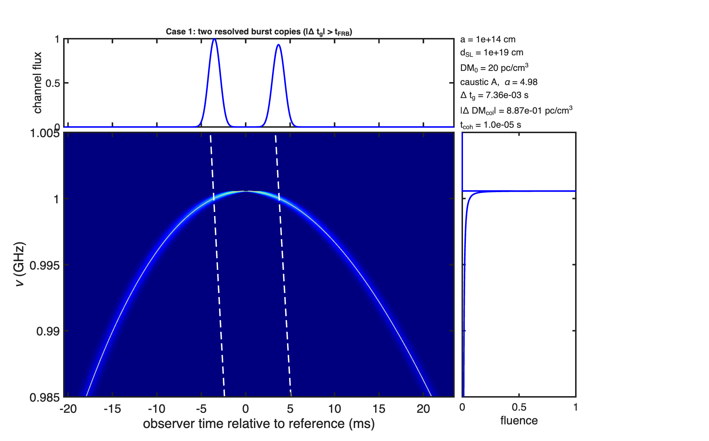
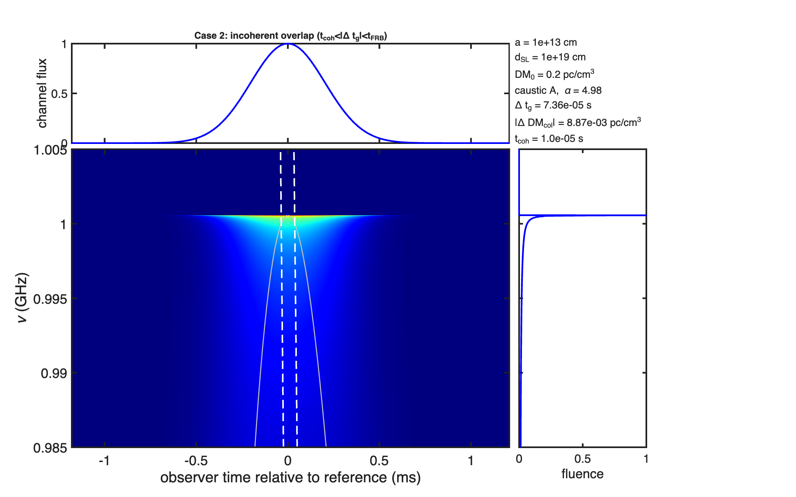
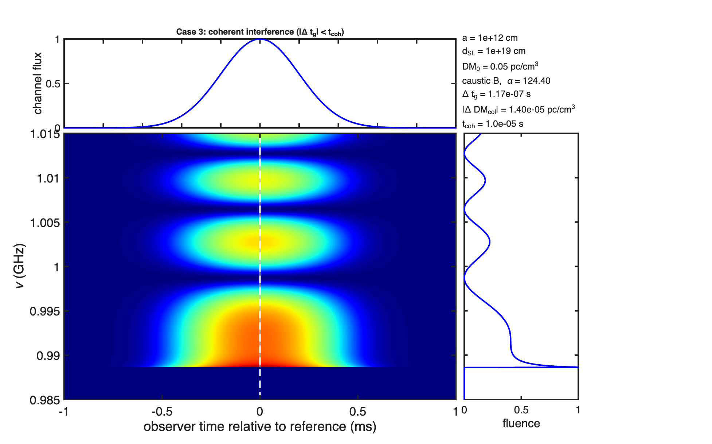
图注：动态谱横纵轴为接收时间和频率，未做去色散，只减去与频率无关的参考时间；每组附有近1 GHz时间轮廓及积分频谱。上为两像时间分离，中为重叠但近非相干，下为重叠且完全相干。实线为精确群延迟，虚线为按参考频率电子柱得到的冷等离子体轨迹。
怎么看这张图：先判断两像是否分开，再看是否有条纹。真实路径随频率变化，使单一色散轨迹不能完全重合；图中的完全相干是示例条件，部分相干会降低条纹对比度而不改变间距。 支持正文的实际观测、模型比较或限制，保留原始面板。
来源与置信度：arXiv HTML；source verified；https://arxiv.org/html/2609.31842v1/case1.png；https://arxiv.org/html/2609.31842v1/case2.png；https://arxiv.org/html/2609.31842v1/case3.png
强相关工作
本文建立在其引用的FRB等离子体透镜及脉冲星透镜观测研究之上，增加了近焦散情况下多个观测量的共同标度与相干性限制。既有研究说明传播确实能够产生复杂动态谱，但不能保证任一FRB窄带结构都由同样透镜导致。相关基础文献可由原文Cordes等及Main等引用追溯，重点比较假设的透镜几何和观测分辨率。
今天的FRB持续射电源调查关注爆发源周围是否存在长期辐射环境，而本文关注视线上的局部电子结构，两者不能互相替代。持续源关联不直接证明存在合适薄屏，透镜迹象也不要求一定有明亮持续源。真正的连接需要同一源的定位、偏振、散射及环境观测，并明确电子柱和磁场约束来自哪一种资料。
同一事件 / 同类源线索：
相似工作：
基础理论 / 方法工作：
（未提供）
相反观点 / 张力线索：
（未提供）
相关简报
1. Jet Forecast: Timing of Discrete Jet Ejections of Stellar-Mass Black Holes Anticipated via X-ray Properties
- 来源：arXiv / astro-ph.HE
- 链接：https://arxiv.org/abs/2609.34947
- 作者：Toshihiro Kawaguchi, Kazutaka Yamaoka
- 公告 / 来源日期：2026-09-29
- 阅读层级：相关简报
- 评分：novelty 7/10，importance 8/10，relevance 9/10，final 9.05/10
- 推荐理由：四个黑洞X射线双星的盘谱与变异提前量可指导喷流监测，保留具体适用条件。
中文题目：喷流爆发前，吸积盘先变了什么？四个黑洞双星的回溯比较
问题、方法与结论：作者比较XTE J1859+226、XTE J1550−564、GX 339−4和MAXI J1820+070，在射电喷流活动前后的X射线能谱与快速变化。用盘辐射加康普顿散射模型估计内盘温度、亮度与半径，并计算0.03–64 Hz的分数均方根变化幅度。四源中，内盘半径缩小和快速变化减弱通常出现在射电峰前约1–10天，提示吸积流几何与时变行为可作为后续喷流活动的观察线索。
意义与贡献：这把喷流触发讨论从单看X射线亮度，推进到内盘结构与快速变化的联合演化。由盘亮度和半径估计的吸积率并未总在抛射附近突增，其中部分事件也在亚爱丁顿条件下发生，因此“达到某个高亮度就必然抛射”不是充分解释。
可借鉴之处：可借鉴的是在同一时间轴上比较半径、亮度、快速变化和射电活动，而不是为每个波段单独找峰。用于触发后随观测时，应保留谱模型、质量、距离、倾角和谱硬化修正；冷盘移出仪器能带后，拟合半径可能比真实几何变化更不稳定。
局限与关注点：这是一组已知事件的回溯研究，尚未给出前瞻预报的命中率、误报率或盲测结果。射电峰还受同步辐射自吸收与传播时延影响，不能当成精确喷流发射时刻。可把这些联合趋势用作观测优先级线索，但不能直接宣称已有可靠的“提前几天预测喷流”工具。
图4：内盘半径与快速变化的共同演化
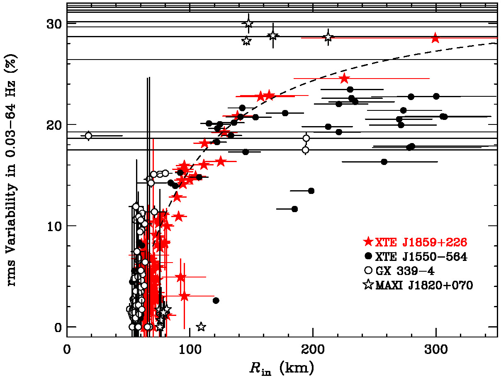
图注：横纵坐标比较内盘半径和分数均方根变化幅度；实心圆、空心圆和空心星分别为XTE J1550、GX 339和MAXI J1820，红色实心星为XTE J1859，点线为其已有拟合关系。
怎么看这张图：看不同源是否沿相似方向变化，以及是否存在回程差异。关联支持联合监测的价值，但图本身没有给出提前预报的命中率，也不能消除盘谱模型造成的半径系统误差。 支持正文的实际观测、模型比较或限制，保留原始面板。
来源与置信度：arXiv HTML；source verified；https://arxiv.org/html/2609.34947v1/fig4_rin_rms_all.jpg
2. A Probabilistic Method for Estimating VLBI Jet-Component Ejection Epochs. Application to MOJAVE 15 GHz VLBA Kinematics
- 来源：arXiv / astro-ph.HE
- 链接：https://arxiv.org/abs/2609.33917
- 作者：Vladislav A. Makeev, Yuri Y. Kovalev, Cecilia Degli Agosti, Daniel C. Homan
- 公告 / 来源日期：2026-09-29
- 阅读层级：相关简报
- 评分：novelty 7/10，importance 8/10，relevance 9/10，final 9.05/10
- 推荐理由：MOJAVE喷流轨迹的核心相容概率与时间不确定度可用于后续多信使关联；权重和不等于试验因子。
中文题目：用概率代替硬切：从MOJAVE喷流轨迹估计射电结的核心穿越时间
问题、方法与结论：作者重新处理MOJAVE的1923条射电喷流成分轨迹，其中1589条的最接近核心时刻早于首次观测。结合匀速或加速运动拟合、参数抽样和有效核心位置尺度，计算每条轨迹在回推时与核心相交的概率及时间分布。用非加速轨迹标定的有效尺度约0.16±0.02毫角秒；457条轨迹的相容概率至少为0.68，其时间不确定度中位数约0.29年。
意义与贡献：过去用确定性几何条件筛选，会把略偏离核心但误差较大的轨迹直接剔除。概率表示保留了这些不确定性，让样本选择与后续关联分析更连续。论文给出的概率和加权有效数量增加，表示可用轨迹信息增加，并不等于发现了更多真实多信使关联。
可借鉴之处：值得借鉴的是同时传播运动参数和有效核心位置误差，再把每条轨迹的时间分布带入伽马或中微子关联检验。所有1589条的概率权重总和约624，不能当成624次独立检验的试验因子；真正的偶然关联率仍需通过模拟空假设和完整选择函数估计。
局限与关注点：这里的“抛射概率”实际衡量在指定模型下轨迹与射电核心相容，并非黑洞附近物理发射事件的后验概率。核心具有光学深度和位置漂移，其15 GHz标定不能直接移植到其他频率；射电核心穿越与中心引擎活动之间也可能有传播时延。中微子关联窗口因此仍需物理与统计两层校准。
图4：概率阈值怎样改变可用样本
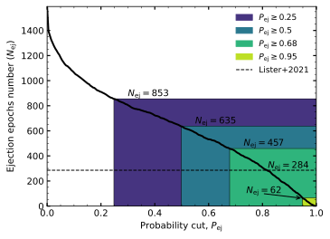
图注：黑线给出核心穿越概率阈值与入选抛射时刻数量的累积分布，彩色区分阈值区间，图中标注代表性切分的数量，水平虚线为旧目录抛射时刻总数。
怎么看这张图：放宽阈值可保留更多轨迹，但质量也随之变化。后续多信使分析应使用概率与时间分布，并独立校准偶然关联；不能把曲线提高的数量直接解释为新增物理关联。 支持正文的实际观测、模型比较或限制，保留原始面板。
来源与置信度：arXiv HTML；source verified；https://arxiv.org/html/2609.33917v1/Nej_cumulative.svg
3. Discovery of minute-scale polarization angle rotation in a supermassive black hole jet
- 来源：arXiv / astro-ph.HE
- 链接：https://arxiv.org/abs/2609.31836
- 作者：Aristeidis Polychronakis, Ioannis Liodakis, Dmitry Blinov, Anastasia Glykopoulou, Sebastian Kiehlmann, Karan Pal, Georgios F. Paraschos, Lena Debbrecht
- 公告 / 来源日期：2026-09-29
- 阅读层级：相关简报
- 评分：novelty 8/10，importance 7/10，relevance 9/10，final 9.00/10
- 推荐理由：分钟级偏振转动观测有价值，但跨源时间压缩与附录Doppler比例不一致，冲击解释未排除其他机制，降为简报。
中文题目：80分钟转过136度：PKS 1510−089的快速光学偏振变化
问题、方法与结论：RoboPol在2024年5月的监测中记录到PKS 1510−089的光学偏振角约80分钟转过136度，对应约每天2450度的变化，而偏振度大致保持在1%–4%的低水平。作者进行偏振角连续展开、分箱和变化检验，并结合43 GHz VLBA喷流成分回推，讨论运动激波与较稳定结构相互作用的可能性。
意义与贡献：事件在没有强烈光学增亮的背景下出现，说明总流量平稳也可能隐藏快速磁场几何变化。它为喷流有序结构与湍流的竞争提供了短时间尺度样本；但偏振角展开和显著变化检验只证明数据中的变化，不能直接证明某一种冲击机制。
可借鉴之处：方法上应把总强度、偏振度、偏振角及射电结构放在同一时间轴，保留角度的180度简并和测量误差。高能未见同步峰还需检查曝光：本次快速事件期间LAT视场位置不利，几日尺度无显著伽马变化不能排除80分钟内的短暂活动。
局限与关注点：全文核查后降为简报：跨源对比图采用约0.12的时间压缩，但附录按多普勒因子给出的比例约0.60或0.45，不能据此声称两事件的时标差已被一致解释。射电核心穿越回推也不是对五月相互作用的精确定位；磁重联、湍流或其他几何变化仍未被严格排除。
图1：夜内流量与偏振
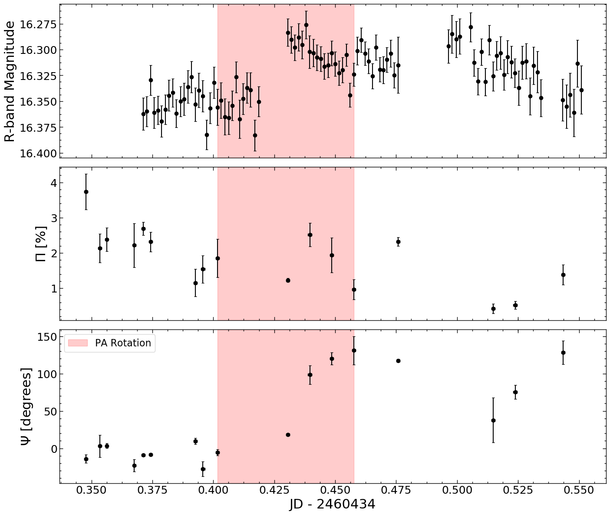
图注：从上到下为R带流量密度（毫Jy）、偏振度（百分比）与偏振角（度）随时间变化，红色阴影标出偏振角快速转动的区间。
怎么看这张图：把底部角度变化与上两行一起看：强烈转动没有对应同等突出的总流量或偏振度变化。它约束喷流磁结构演化，但不单独判定运动激波、重联或湍流中哪一种机制。 支持正文的实际观测、模型比较或限制，保留原始面板。
来源与置信度：arXiv HTML；source verified；https://arxiv.org/html/2609.31836v1/mag_PD_PA.png
4. Comment on "Fermi-LAT Galactic Center Excess Morphology of Dark Matter in Simulations of the Milky Way Galaxy"
- 来源：arXiv / astro-ph.HE
- 链接：https://arxiv.org/abs/2609.34155
- 作者：Kevork N. Abazajian, Jason Kumar, Oscar Macias
- 公告 / 来源日期：2026-09-29
- 阅读层级：相关简报
- 评分：novelty 8/10，importance 7/10，relevance 9/10，final 9.00/10
- 推荐理由：明确核查湮灭J因子积分顺序的代码问题，影响银河中心超额形态解释，简报说明适用范围。
中文题目：银河中心过量的形态比较，先别投影错了：一篇暗物质模板方法评论
问题、方法与结论：这篇评论检查一项使用银河模拟比较暗物质湮灭与恒星核球形态的工作。评论作者指出，公开代码把投影质量图平方，替代了沿视线积分密度平方的湮灭J因子；两者并不等价。按正确权重重算6个HESTIA模拟星系、各36个观察方向后，暗物质模板仍可扁平，但其中心集中度与恒星模板不同，不能据原投影直接认定二者形态难以区分。
意义与贡献：它指出的是从三维模拟到二维可观测量的一项具体算子错误。对已经投影的图逐点平方会保留等亮度线的几何结构，可能把预期检验的差别先在处理过程中抹掉。修正后的结果有助于重新评估形态论证，但这不是一项新的Fermi-LAT数据拟合，也没有据此发现或排除暗物质信号。
可借鉴之处：可复用的检查是：先明确辐射率依赖密度还是密度平方，再从三维粒子权重投影，最后统一角分辨、曝光和掩膜。文中216幅图来自同6个模拟的多视角，具有相关性，不能当作216个独立星系。模板比较也应同时看集中度与轴比，避免只用单一形态指标。
局限与关注点：模拟约0.22 kpc的软化尺度对应银河中心约1.6度，限制最内区的可靠性；平滑图像不能恢复未解析的结构。部分观测模板已有仪器响应处理，与模拟模板仍需更一致的前向建模。因此这项评论首先改变方法可信度，而非直接决定银河中心过量究竟来自毫秒脉冲星还是暗物质。
图1：不同投影定义产生不同形态
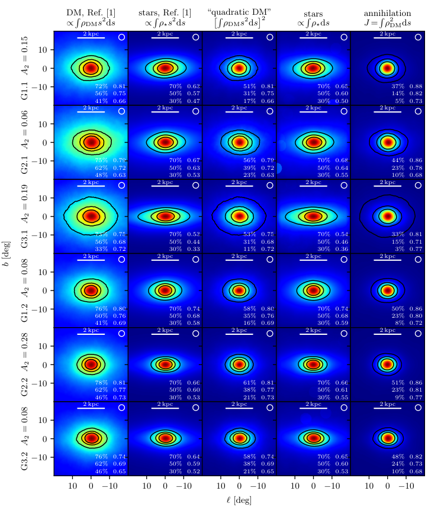
图注：六行对应六个银河模拟。前3列为旧方法的暗物质质量投影、老恒星质量投影及暗物质投影平方，后2列为修正的恒星柱密度与湮灭强度；同行观察位置和15 kpc截断一致，图各自按峰值归一，使用相同3度孔径。等值线表给出水平与轴比，标尺为2 kpc，圆圈表示软化尺度对应的1.6度。
怎么看这张图：首先比较前1与第3列：对已有二维图平方不会独立改变等值线几何。再看修正湮灭图的中心集中性；最内区仍受模拟软化限制，不能把这些图当作新Fermi数据的直接拟合。 支持正文的实际观测、模型比较或限制，保留原始面板。
来源与置信度：arXiv HTML；source verified；https://arxiv.org/html/2609.34155v1/fig_sm_6halo.png
5. Constraints on Supermassive Black Hole Binaries from the Lack of Resolvable Sources in the NANOGrav 15-yr Dataset
- 来源：arXiv / astro-ph.HE
- 链接：https://arxiv.org/abs/2609.32306
- 作者：Emiko C. Gardiner, Kayhan Gültekin, Philippe Turgeon, Bence Bécsy, Laura Blecha, Nikita Agarwal, Gabriella Agazie, Akash Anumarlapudi
- 公告 / 来源日期：2026-09-29
- 阅读层级：相关简报
- 评分：novelty 8/10，importance 8/10，relevance 7/10，final 8.65/10
- 推荐理由：纳赫兹背景与连续波未检出联合约束源数和质量，重要但与个人主线关联中等，简报。
中文题目：没有找到单个连续波，也能约束双黑洞族群：NANOGrav背景与未检出的联合使用
问题、方法与结论：作者把NANOGrav的随机引力波背景谱与未发现显著单个连续波源的结果放进同一个超大质量双黑洞族群模型。大量模拟宇宙生成背景和最亮源，再用经过注入检验标定的检测概率，给每组族群参数计算“看到背景但仍未检出单源”的可能性。相比只用背景，未检出信息倾向限制由少数特别巨大的双黑洞主导的模型。
意义与贡献：相同背景功率既可能由很多较弱源产生，也可能由少量亮源贡献；后者更容易被单源搜索发现。因此未检出具有方向明确但目前较弱的额外约束，帮助区分背景内部的离散源组成。论文不是一次连续波发现，新增约束也不足以唯一确定真实双黑洞质量分布。
可借鉴之处：值得借鉴的是把检测效率而非硬应变上限接入族群推断，并把背景与最亮源从同一个随机宇宙生成。作者用QuickCW注入结果标定检测函数，再检查联合概率近似的适用性；这种方法能把搜索管线的实际灵敏度纳入天体物理解释，比简单要求每个模拟源低于一条曲线更完整。
局限与关注点：模型固定部分星系对比例和并合时间假设，其他自由参数可能吸收这些不确定性。因此偏高的星系质量函数归一化未必是字面上的星系数目测量，也可能反映并合率等退化；部分后验还接近先验边界。当前结果应视为一套模型族内的弱增量约束，不能据此确定环境硬化机制或宣称已有精确族群画像。
图5：加入连续波未检出后的族群约束
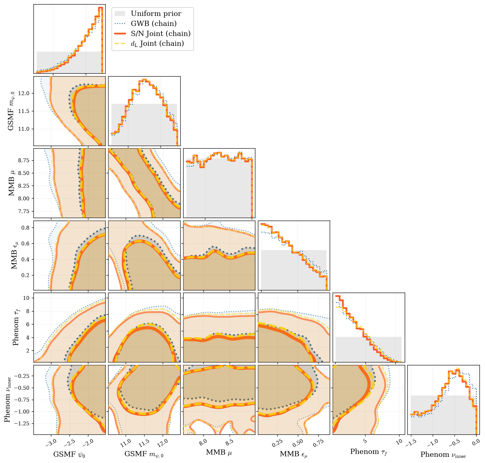
图注：角图比较仅背景的蓝色点线后验与加入连续波未检出后的联合后验；橙实线为信噪比检测函数方法，深黄虚线为距离方法，灰色为均匀先验。二维等值线按原文方式平滑，部分联合后验向先验边界移动。
怎么看这张图：先比较联合与仅背景曲线移动了多少，而不是只看联合曲线多窄。边界附近的收缩依赖先验，当前新增信息较弱，不能把某一窄峰直接解释为精确测得的真实双黑洞族群参数。 支持正文的实际观测、模型比较或限制，保留原始面板。
来源与置信度：arXiv HTML；source verified；https://arxiv.org/html/2609.32306v1/fig5_joint_corner_prior.png
6. Discovery of a 62-min long-period transient with near-orthogonal rotator geometry
- 来源：arXiv / astro-ph.HE
- 链接：https://arxiv.org/abs/2609.34102
- 作者：Scott D. Hyman, Natasha Hurley-Walker, Dale A. Frail, Emil Polisensky, W. M. Cotton
- 公告 / 来源日期：2026-09-29
- 阅读层级：相关简报
- 评分：novelty 8/10，importance 7/10，relevance 8/10，final 8.65/10
- 推荐理由：新长周期射电瞬变主脉冲与interpulse偏振差异提供磁层几何约束，保留简报。
中文题目：62分钟周期、两种偏振脉冲：一个长期大多沉寂的长周期射电瞬变
问题、方法与结论：作者从MeerKAT和ASKAP在2022年5月的同期资料中发现LPT J1555−5631。交替出现的主脉冲与间脉冲具有不同宽度和偏振，对应约62.2分钟完整周期、约165.4度相位间隔。主脉冲同时含线偏振和圆偏振，间脉冲接近完全圆偏振；两者圆偏振符号相反，使双磁极或不同磁区的辐射成为值得检验的解释。
意义与贡献：这给极慢周期相干射电辐射增加了一个结构丰富的样本。多年的其他观测未再检出类似活动，说明长周期瞬变的活动窗口和占空比会显著影响巡天发现率；不能仅按一次亮态外推整个族群的持续亮度或数目。
可借鉴之处：发现依赖从可见度中减去稳定场源、保留高时间分辨和完整偏振，再联合两台望远镜验证变化。偏振符号、脉冲宽度和不等间隔共同帮助识别完整周期，避免误把相邻脉冲间隔当作自转周期。源在长期平均图上的畸形外观也可能来自时变采样，而非真实空间延展。
局限与关注点：观测只保证活动至少覆盖约15小时，相邻高灵敏度未检出把持续窗口限制在约10个月内，不能说它只活跃了15小时。距离、周期导数和可靠光学对应体仍不足，磁星、中子星或白矮星相关解释尚未确定；双磁极图像和电子回旋脉泽都属于待检验机制，不能当成已确认源类型。
图6：折叠后的主脉冲与间脉冲偏振
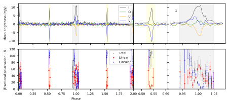
图注：ASKAP的EMU观测按表2星历折叠到200个相位箱，约9个周期叠加后噪声约0.7毫Jy每波束。上排为Stokes参数，下排为偏振比例；中、右为左侧全相位图的局部放大，仅在信噪比足够的阴影区展示偏振推断。
怎么看这张图：比较两种脉冲的圆偏振符号和线偏振份额，而非只比较强度。不同偏振支持不同磁区或双极解释，但没有距离和周期导数时，还不足以确定中子星或白矮星身份。 支持正文的实际观测、模型比较或限制，保留原始面板。
来源与置信度：arXiv HTML；source verified；https://arxiv.org/html/2609.34102v1/Folded_EMU_light_curve.svg
7. Spin wandering of an accreting neutron star near torque balance: implications for gravitational wave searches
- 来源：arXiv / astro-ph.HE
- 链接：https://arxiv.org/abs/2609.32164
- 作者：Andrew Melatos
- 公告 / 来源日期：2026-09-29
- 阅读层级：相关简报
- 评分：novelty 7/10，importance 7/10，relevance 8/10，final 8.35/10
- 推荐理由：随机转矩连接X射线通量、引力波自旋漂移与相干搜索长度，有明确方法用途。
中文题目：吸积导致的自转游走，怎样决定连续引力波搜索的相干时长
问题、方法与结论：作者把吸积中子星在平均扭矩平衡附近的小幅自转变化，建模为具有回复趋势的随机过程：吸积与引力辐射反作用决定平均平衡，随机扭矩推动频率游走。再将频率散布与X射线流量或候选引力波应变联系起来，估算半相干连续波搜索能使用多长的数据段，而不让信号漂出频率单元。
意义与贡献：相干积分越长越有利于累积弱信号，但未知自转漂移会破坏相位匹配。本文把这个折衷与吸积物理联系起来，提供比任意固定漂移率更有解释性的先验；它没有探测到新的引力波，也没有直接测得所有目标的真实相干时间。
可借鉴之处：作者对22个代表目标比较盘—磁层不稳定性和盘闪烁噪声两种驱动。基准结果前者常给出约10–100天，后者约0.1–10天，显示驱动的幅度和相关时间会显著改变搜索设计。可先用X射线变化约束驱动，再通过注入恢复测试比较相干段长和频率追踪方案。
局限与关注点：这些范围依赖小扰动、近扭矩平衡及采用的噪声模型，示例还统一使用0.1 kHz引力波频率，并非每个目标已测频率。盘外流、磁层边界厚度和非白噪声都可能改变结果。应用时应保留机制不确定性，不能把某个目标的表格数值当成不需校准的最佳搜索时长。
图1：模型预测的最大相干段长
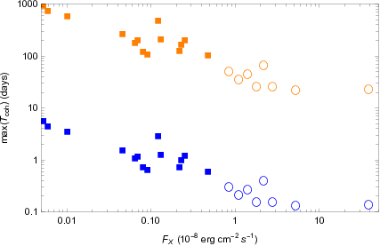
图注：横轴为时间平均X射线流量（erg每平方厘米每秒），纵轴为最大相干数据段长（天）。橙、蓝点分别为盘—磁层Rayleigh–Taylor不稳定性和盘闪烁噪声驱动；实心方块与空心圆区分热核暴振荡和千赫兹准周期振荡目标。22源采用共同0.1 kHz引力波频率及文中基准参数。
怎么看这张图：同一目标在两种驱动下可相差很大，说明物理噪声先验影响搜索策略。这些点是条件预测而非逐源实测相干时间，不能直接当作已验证的最佳积分时长。 支持正文的实际观测、模型比较或限制，保留原始面板。
来源与置信度：arXiv HTML；source verified；https://arxiv.org/html/2609.32164v1/fig1.png
8. Fast radio burst - persistent radio source systems I. A 1.2 GHz search and catalog definition
- 来源：arXiv / astro-ph.HE
- 链接：https://arxiv.org/abs/2609.35729
- 作者：D. Pelliciari, L. Bruno, G. Bernardi, M. Pilia, P. Esposito, L. Beduzzi, A. Geminardi, O. Smirnov
- 公告 / 来源日期：2026-09-29
- 阅读层级：相关简报
- 评分：novelty 7/10，importance 7/10，relevance 8/10，final 8.35/10
- 推荐理由：FRB持续射电源候选、确证与灵敏度完备子样本分层统计有用，关联等级和比例误差需保留。
中文题目：FRB附近的持续射电源有多常见？24源观测与75源合并样本
问题、方法与结论：作者用uGMRT约1.26 GHz连续谱观测24个FRB位置，正文样本为13个重复源和11个目前仅见一次的源，检查持续射电对应体并给出上限。新提出的四个关联仍是候选，需要更精确定位与紧致性检验。与文献合并为75源后，再按统一亮度阈值选取有足够灵敏度的子样本，估计明亮持续源的出现比例。
意义与贡献：持续射电源可能记录FRB附近的星云、长期能量注入或宿主其他活动，但“位置附近有射电光”不等于已找到FRB本体环境。作者区分保守确证与包含候选的统计口径，整体比例约6%与14%，95%区间都很宽；重复源更常伴随持续源的趋势仍不足以成为强结论。
可借鉴之处：可复用的是先把不同深度的观测转换成亮度限制，再在完备子样本上比较，而不是将全部75个目标直接做分母。以每Hz每秒十的29次方erg为阈值，符合条件的是29个单次源和22个重复源。红移、通量误差和宿主关联不确定性都应进入上限与候选分类。
局限与关注点：角秒级未分辨射电源并不证明其为秒差距尺度的紧致持续源；恒星形成、活动星系核和偶然投影都可能混入，个别FRB宿主关联本身也较弱。摘要的样本计数及结论段一处误差与正文不一致，本简报采用样本节与统计节口径。下一步高分辨成像和精确爆发定位，比继续扩大未经确认的候选分子更关键。
图3：持续射电源出现比例的口径依赖
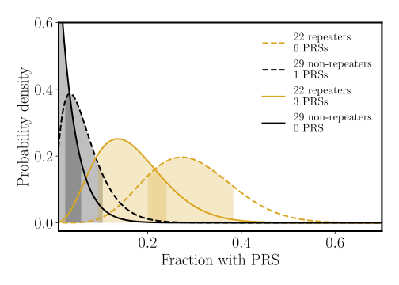
图注：黑色与橙色曲线分别为目前单次和重复FRB的持续射电源出现比例分布。实线采用保守关联，虚线把候选纳入；阴影表示各分布的1σ区间。
怎么看这张图：比较同一颜色实虚线移动的幅度，可见候选确认状况对结论的影响。图中1σ阴影与正文引用的95%区间口径不同；重复源比例偏高目前仍不构成强族群差异证据。 支持正文的实际观测、模型比较或限制，保留原始面板。
来源与置信度：arXiv HTML；source verified；https://arxiv.org/html/2609.35729v1/PRS_occurrence.svg
9. A Delayed Rejection Reversible Jump Markov Chain Monte Carlo Method for Multi-Resolution Maps of the Stochastic Gravitational Wave Background with Pulsar Timing Array Data
- 来源：arXiv / astro-ph.HE
- 链接：https://arxiv.org/abs/2609.32022
- 作者：Taha T. Moursy, Nihan S. Pol
- 公告 / 来源日期：2026-09-29
- 阅读层级：相关简报
- 评分：novelty 7/10，importance 7/10，relevance 8/10，final 8.35/10
- 推荐理由：自适应HEALPix分辨率重建PTA引力波背景天图；现实注入的振幅及位置偏差仍未解决，方法有用但校准未充分。
中文题目：哪里需要更细的引力波天空图？PTA自适应像素重建与尚未解决的校准偏差
问题、方法与结论：作者用可逆跳跃蒙特卡洛方法，让脉冲星计时阵列的引力波背景天空图自动拆分或合并HEALPix像素，同时估计各像素强度。输入是按频率估计的脉冲星对相关量及其协方差；弱或近各向同性区域保持粗网格，强局部信号周围可提高分辨率。理想注入测试能恢复不同尺度热点，减少整片天空统一使用高分辨率造成的参数浪费。
意义与贡献：PTA对天空方向的灵敏度很不均匀，按脉冲星对数机械选择统一像素数，既可能在弱区域过拟合，也可能漏掉亮源附近的结构。本文使“需要多少空间自由度”成为推断的一部分，为未来各向异性和亮双黑洞贡献的分析提供了有用框架。
可借鉴之处：可借鉴的是保留相关量之间的协方差，并用可逆的分裂、合并操作比较不同维数模型；单纯细化亮像素而不计模型复杂度会高估结构。文中参数数量可下降一到三个数量级，不能直接等同运行时间提升同样倍数，实际效率还取决于采样混合和似然计算。
局限与关注点：更接近真实观测时刻的注入测试仍出现明显问题：某例注入应变约三乘十的负十三次方，恢复约十的负十二次方且给出很窄误差，最亮位置也偏离注入方向。作者讨论噪声实现的影响，但这尚不足以证明覆盖率已校准。因此本篇保留为方法简报，不把示范天图当作已可靠测出的真实天空结构。
图3：现实观测采样下的自适应天图
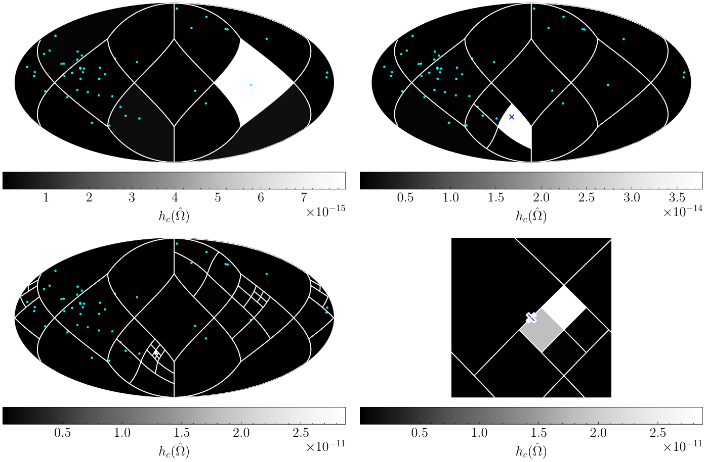
图注：左上为仅注入各向同性背景，右上额外注入啁啾质量十的9次方太阳质量双黑洞；下排为十的10次方太阳质量注入的全天图及10度见方局部图。蓝叉标注注入位置，颜色为角功率密度，需要对天空积分后才能得到背景应变。
怎么看这张图：网格随局部信号变细体现方法目标，但应同时观察峰值与蓝叉是否重合。正文现实注入存在振幅和位置偏差，这张图不能被当作无偏重建能力已经完全验证的证据。 支持正文的实际观测、模型比较或限制，保留原始面板。
来源与置信度：arXiv HTML；source verified；https://arxiv.org/html/2609.32022v1/fig_realistic.png
10. Volatile depletion in rocky planets as a chemical fingerprint of hybrid accretion
- 来源：Nature Astronomy
- 链接：https://www.nature.com/articles/s41550-026-02984-6
- 作者：Haiyang S. Wang, Anders Johansen, Ziyan Xu, Marie-Luise Steinmeyer, Michiel Lambrechts, Elishevah van Kooten, Chao-Chin Yang, Zhaohuan Zhu
- 公告 / 来源日期：2026-09-25
- 阅读层级：相关简报
- 评分：novelty 8/10，importance 8/10，relevance 6/10，final 8.30/10
- 推荐理由：地球火星挥发亏损检验混合吸积路径；全文核查支持方法价值，但卵石比例依赖星子组成，列近期未读简报。
中文题目：地球和火星怎样拼起来？用挥发性元素亏损检验卵石与星子混合吸积
问题、方法与结论：作者用13种造岩亲石元素相对太阳组成的亏损，检验岩质行星由卵石、星子及大型撞击体混合增长的历史。模型把小颗粒在原行星包层中蒸发、气体循环带走挥发物的过程，与三维流体计算和成分贝叶斯拟合连接。采用类似灶神星的星子组成时，地球参考解主要来自经历卵石吸积的原行星物质，火星则更偏向星子贡献。
意义与贡献：它尝试把行星形成途径转成可与化学丰度比较的预测，而不仅比较增长速度。地球和火星不同的元素亏损趋势可能记录不同积累方式；但这种化学反演并不唯一，结论仍取决于原料组成和挥发物保留机制，不能当作直接数清了各类撞击体。
可借鉴之处：可借鉴的是从热化学与气体输运生成端元成分，再拟合混合比例并比较模型证据。地球参考三成分解约为64%卵石端元、14%星子与22%撞击体；撞击体也有自己的增长历史，不能简单把最后一项全部归入纯星子。两成分版本与三成分版本还可能具有相近统计支持。
局限与关注点：“地球至少约75%来自卵石途径”依赖类似灶神星的星子先验；允许星子组成改变时，卵石贡献可降至约40%，因此不是普适下限。大型撞击中的挥发物损失、包层循环边界和同位素来源仍有简化。本文实际发表于9月25日，作为近期未读重要期刊论文入选，不标成今天新发表。
图3：地球化学组成与混合增长
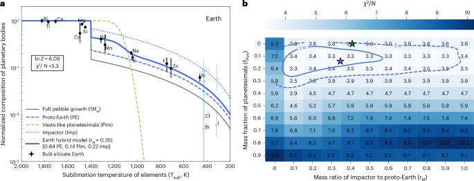
图注：左图为地球造岩元素相对原太阳并以铝归一的丰度与升华温度关系，黑点及误差为均值与1σ，蓝实线为64%原地球卵石端元、14%灶神星式星子和22%撞击体的参考混合，虚线与点线为端元。右图比较撞击体质量比与星子比例的拟合质量，叠加后验1σ、2σ等值线和两种模型参考解。图中卡方除以13个元素数，不能等同已扣除自由参数后的约化卡方。
怎么看这张图：比较挥发性不同的元素如何共同限制混合，而不是只看某个拟合点。蓝绿参考解表明不同成分组合也可能同样可行；对星子原料组成的假设变化，会明显改变所谓卵石比例下限。 用实际化学拟合说明机制及组成退化。
来源与置信度：Nature publisher；source verified；https://media.springernature.com/lw685/springer-static/image/art%3A10.1038%2Fs41550-026-02984-6/MediaObjects/41550_2026_2984_Fig3_HTML.png
说明
评分由 LLM 给出初评，再由本地阈值策略过滤；IACT、TeV 伽马射线和高能中微子天文学按重点方向处理。